<!DOCTYPE html>
<html lang="en">
<head>
  <meta charset="UTF-8">
  <meta name="viewport" content="width=device-width, initial-scale=1.0">
  <meta name="theme-color" "#120818"><!-- 🎨 Update this to match --bg-color if you change theme -->
  <title>OAU STA 121 CBT • 2026</title>
  <script src="https://cdn.tailwindcss.com"></script>
  <script src="https://unpkg.com/react@18/umd/react.production.min.js"></script>
  <script src="https://unpkg.com/react-dom@18/umd/react-dom.production.min.js"></script>
  <script src="https://unpkg.com/@babel/standalone/babel.min.js"></script>
  <!-- KaTeX -->
  <link rel="stylesheet" href="https://cdn.jsdelivr.net/npm/katex@0.16.11/dist/katex.min.css">
  <script defer src="https://cdn.jsdelivr.net/npm/katex@0.16.11/dist/katex.min.js"></script>
  <script defer src="https://cdn.jsdelivr.net/npm/katex@0.16.11/dist/contrib/auto-render.min.js"></script>
  <style>
    /* ════════════════════════════════════════════════════════════════
       🖼️  BACKGROUND IMAGE — change the URL below to update the app background
       Replace the URL with your own image link, or use '' to keep solid color
       Example: url('https://your-image-link.jpg')
       ════════════════════════════════════════════════════════════════ */
    /* ════════════════════════════════════════════════════════════════
       🎨  THEME — change these variables to restyle the entire app
       ────────────────────────────────────────────────────────────────
       --accent        : main color for buttons, active states, glows
       --accent-dark   : darker shade (gradient start on big buttons)
       --accent-deep   : deepest shade (gradient end / indigo tone)
       --accent-rgb    : R,G,B of --accent WITHOUT # (for rgba() use)
       --accent-muted  : very faint accent tint for surfaces/borders
       --bg-color      : page background
       --bg-image      : optional background image url('...')
       --surface       : card / input background
       --border        : subtle border color
       --text          : primary text
       --text-muted    : secondary / dimmed text

       ── PRESET EXAMPLES ──────────────────────────────────────────
       Blue (default):  --accent:#3b82f6; --accent-dark:#2563eb; --accent-deep:#4f46e5; --accent-rgb:59,130,246;
       Green:           --accent:#22c55e; --accent-dark:#16a34a; --accent-deep:#15803d; --accent-rgb:34,197,94;  --bg-color:#011a0a;
       Purple:          --accent:#a855f7; --accent-dark:#9333ea; --accent-deep:#7c3aed; --accent-rgb:168,85,247; --bg-color:#0d0618;
       Amber:           --accent:#f59e0b; --accent-dark:#d97706; --accent-deep:#b45309; --accent-rgb:245,158,11; --bg-color:#16100000;
       Red:             --accent:#ef4444; --accent-dark:#dc2626; --accent-deep:#b91c1c; --accent-rgb:239,68,68;  --bg-color:#1a0303;
       ════════════════════════════════════════════════════════════════ */
    :root {
      --accent:        #c026d3;
      --accent-dark:   #a21caf;
      --accent-deep:   #be123c;
      --accent-rgb:    192,38,211;
      --accent-muted:  rgba(192,38,211,0.12);
      --bg-color:      #120818;
      --bg-image:      url('BG.jpeg'); /* e.g: url('https://...') */
      --bg-overlay: rgba(0,0,0,0.9);
      --surface:       rgba(255,255,255,0.04);
      --border:        rgba(255,255,255,0.07);
      --text:          #ffffff;
      --text-muted:    rgba(255,255,255,0.35);
    }
    body{
      background-color: var(--bg-color);
      background-image: var(--bg-image);
      background-size: cover;
      background-position: center;
      background-attachment: fixed;
      font-family: system-ui,-apple-system,sans-serif;
      min-height:100vh;
    }
    body::before {
      content: '';
      position: fixed;
      inset: 0;
      background: var(--bg-overlay);
      z-index: -1;
      pointer-events: none;
    }

    /* ══ Modern Login Page Styles ══ */
    .login-page {
      min-height: 100vh;
      display: flex;
      align-items: center;
      justify-content: center;
      padding: 24px;
      position: relative;
    }
    .login-card {
      width: 100%;
      max-width: 420px;
      background: rgba(8,18,45,0.94);
      backdrop-filter: blur(28px);
      -webkit-backdrop-filter: blur(28px);
      border: 1px solid rgba(var(--accent-rgb),0.2);
      border-radius: 28px;
      padding: 44px 36px 40px;
      position: relative;
      z-index: 10;
      box-shadow: 0 8px 64px rgba(0,0,0,0.6), 0 0 0 1px rgba(255,255,255,0.04) inset;
    }
    .login-logo-wrap {
      display: flex;
      justify-content: center;
      margin-bottom: 28px;
    }
    /* ════════════════════════════════════════════════════════════════
       🖼️  CALCULATOR / LOGO IMAGE — edit the login-logo-img CSS below
       The atom ⚛️ icon is currently shown as text. To replace it with
       an actual image, swap the <div class="login-logo-icon"> element
       in the JSX with an  tag pointing to your image URL.
       Example: 
       Adjust width/height below as needed:
       ════════════════════════════════════════════════════════════════ */
    .login-logo-img { width: 90px; height: 90px; object-fit: contain; }
    .login-logo-icon {
      width: 90px; height: 90px;
      background: linear-gradient(135deg, rgba(var(--accent-rgb),0.15), rgba(var(--accent-rgb),0.08));
      border-radius: 24px;
      border: 1px solid rgba(var(--accent-rgb),0.3);
      display: flex; align-items: center; justify-content: center;
      font-size: 42px;
      box-shadow: 0 0 30px rgba(var(--accent-rgb),0.2), 0 0 60px rgba(var(--accent-rgb),0.1);
    }
    .login-badge {
      display: inline-flex; align-items: center; gap: 6px;
      background: rgba(var(--accent-rgb),0.12);
      border: 1px solid rgba(var(--accent-rgb),0.25);
      border-radius: 999px;
      padding: 4px 14px;
      font-size: 11px; font-weight: 700; letter-spacing: 0.1em;
      color: rgba(var(--accent-rgb),0.95);
      text-transform: uppercase;
    }
    .login-title {
      font-size: 28px; font-weight: 800; color: #fff;
      letter-spacing: -0.5px; margin: 0; line-height: 1.2;
    }
    .login-subtitle {
      font-size: 14px; color: rgba(148,163,184,0.75);
      margin: 4px 0 0; font-weight: 400;
    }
    .login-divider {
      height: 1px;
      background: linear-gradient(90deg, transparent, rgba(var(--accent-rgb),0.2), transparent);
      margin: 28px 0;
    }
    .login-label {
      font-size: 11px; font-weight: 700; letter-spacing: 0.12em;
      color: rgba(var(--accent-rgb),0.85); text-transform: uppercase;
      margin-bottom: 10px; display: block;
    }
    .login-input {
      width: 100%; box-sizing: border-box;
      background: rgba(255,255,255,0.04);
      border: 1.5px solid rgba(var(--accent-rgb),0.2);
      border-radius: 14px;
      padding: 16px 18px;
      font-size: 16px; color: #fff;
      outline: none;
      transition: border-color .2s, box-shadow .2s;
    }
    .login-input:focus {
      border-color: rgba(var(--accent-rgb),0.6);
      box-shadow: 0 0 0 4px rgba(var(--accent-rgb),0.1);
    }
    .login-input::placeholder { color: rgba(255,255,255,0.2); }
    .login-btn {
      width: 100%; margin-top: 24px;
      background: linear-gradient(135deg, var(--accent), var(--accent-deep));
      border: none; border-radius: 14px;
      padding: 17px;
      font-size: 15px; font-weight: 700; letter-spacing: 0.04em;
      color: #fff; cursor: pointer;
      box-shadow: 0 4px 20px rgba(var(--accent-rgb),0.35), 0 1px 0 rgba(255,255,255,0.1) inset;
      transition: transform .15s, box-shadow .15s;
    }
    .login-btn:active { transform: scale(.97); box-shadow: 0 2px 10px rgba(var(--accent-rgb),0.3); }
    .login-footer {
      margin-top: 24px; text-align: center;
      font-size: 12px; color: rgba(255,255,255,0.2);
    }
    .login-stats {
      display: flex; justify-content: center; gap: 24px;
      margin-top: 28px; padding-top: 24px;
      border-top: 1px solid rgba(255,255,255,0.05);
    }
    .login-stat { text-align: center; }
    .login-stat-num { font-size: 20px; font-weight: 800; color: #fff; }
    .login-stat-label { font-size: 11px; color: rgba(255,255,255,0.3); margin-top: 2px; }

    /* ══ Modern Config Screen ══ */
    .cfg-page { min-height:100vh; padding: 0 0 48px; overflow-y:auto; }
    .cfg-topbar { display:flex; justify-content:space-between; align-items:center; padding:20px 20px 0; max-width:480px; margin:0 auto; }
    .cfg-user-chip { display:flex; align-items:center; gap:10px; background:rgba(255,255,255,0.05); border:1px solid rgba(255,255,255,0.08); border-radius:999px; padding:8px 16px 8px 8px; }
    .cfg-avatar { width:32px; height:32px; border-radius:50%; background:linear-gradient(135deg,var(--accent),var(--accent-deep)); display:flex; align-items:center; justify-content:center; font-size:14px; font-weight:800; color:#fff; }
    .cfg-username { font-size:14px; font-weight:600; color:#fff; }
    .cfg-logout-btn { font-size:13px; color:rgba(255,255,255,0.35); background:none; border:none; cursor:pointer; padding:4px 0; text-decoration:underline; text-underline-offset:3px; }
    .cfg-body { max-width:480px; margin:0 auto; padding:24px 20px 0; }
    .cfg-heading { font-size:22px; font-weight:800; color:#fff; margin-bottom:4px; }
    .cfg-subheading { font-size:13px; color:rgba(255,255,255,0.35); margin-bottom:24px; }
    .cfg-section-label { font-size:11px; font-weight:700; letter-spacing:.1em; text-transform:uppercase; color:rgba(var(--accent-rgb),0.85); margin-bottom:10px; display:block; }
    .cfg-avail { font-size:12px; color:rgba(255,255,255,0.25); margin-bottom:24px; }
    .cfg-stepper-card { background:rgba(255,255,255,0.04); border:1px solid rgba(255,255,255,0.07); border-radius:18px; padding:18px 20px; margin-bottom:10px; display:flex; align-items:center; justify-content:space-between; gap:12px; }
    .cfg-stepper-info { flex:1; }
    .cfg-stepper-title { font-size:13px; font-weight:700; color:rgba(255,255,255,0.5); text-transform:uppercase; letter-spacing:.06em; }
    .cfg-stepper-sub { font-size:12px; color:rgba(255,255,255,0.2); margin-top:2px; }
    .cfg-stepper-controls { display:flex; align-items:center; gap:4px; }
    .cfg-stepper-val { font-size:26px; font-weight:800; color:#fff; width:68px; text-align:center; background:transparent; border:none; outline:none; }
    .cfg-stepper-btn { width:40px; height:40px; border-radius:10px; background:rgba(255,255,255,0.07); border:1px solid rgba(255,255,255,0.1); color:#fff; font-size:20px; display:flex; align-items:center; justify-content:center; cursor:pointer; transition:background .1s; user-select:none; -webkit-user-select:none; }
    .cfg-stepper-btn:active { background:rgba(255,255,255,0.15); transform:scale(.93); }
    .cfg-error { font-size:12px; color:#f87171; margin:6px 0 10px; padding:8px 12px; background:rgba(248,113,113,0.08); border:1px solid rgba(248,113,113,0.2); border-radius:8px; }
    .cfg-presets { display:flex; gap:8px; margin-bottom:24px; flex-wrap:wrap; }
    .cfg-preset-btn { flex:1; min-width:56px; padding:8px 4px; border-radius:10px; background:rgba(255,255,255,0.04); border:1.5px solid rgba(255,255,255,0.07); color:rgba(255,255,255,0.45); font-size:12px; font-weight:600; cursor:pointer; text-align:center; transition:all .15s; }
    .cfg-preset-btn:active { background:rgba(var(--accent-rgb),0.2); border-color:var(--accent); color:rgba(var(--accent-rgb),0.9); }
    .cfg-start-btn { width:100%; padding:17px; border-radius:14px; margin-top:4px; background:linear-gradient(135deg,var(--accent-dark),var(--accent-deep)); border:none; color:#fff; font-size:15px; font-weight:800; letter-spacing:.04em; cursor:pointer; box-shadow:0 4px 20px rgba(var(--accent-rgb),0.2); transition:transform .15s; }
    .cfg-start-btn:active { transform:scale(.97); }

    /* ══ Page Tab Switcher ══ */
    .page-tabs { display:flex; background:rgba(255,255,255,0.04); border:1px solid rgba(255,255,255,0.07); border-radius:14px; padding:4px; gap:4px; margin-bottom:24px; }
    .page-tab { flex:1; padding:10px 8px; border-radius:10px; border:none; font-size:13px; font-weight:700; cursor:pointer; transition:all .18s; background:transparent; color:rgba(255,255,255,0.35); text-align:center; }
    .page-tab.active { background:rgba(var(--accent-rgb),0.18); color:rgba(var(--accent-rgb),0.9); border:1px solid rgba(var(--accent-rgb),0.3); }
    .page-tab .tab-badge { display:inline-block; margin-left:5px; background:rgba(var(--accent-rgb),0.3); color:rgba(var(--accent-rgb),0.9); border-radius:999px; font-size:10px; font-weight:800; padding:1px 6px; vertical-align:middle; }
    .page-tab.active .tab-badge { background:rgba(var(--accent-rgb),0.5); }

    /* ══ Topic Selection ══ */
    .topic-grid { display:grid; grid-template-columns:1fr 1fr; gap:10px; margin-bottom:12px; }
    @media(min-width:480px){ .topic-grid { grid-template-columns:1fr 1fr 1fr; } }
    .topic-card {
      padding:14px 12px; border-radius:14px; text-align:left;
      border:1.5px solid rgba(255,255,255,0.07);
      background:rgba(255,255,255,0.03);
      color:rgba(255,255,255,0.4); cursor:pointer;
      transition:all .15s; position:relative; overflow:hidden;
    }
    .topic-card:active { transform:scale(.97); }
    .topic-card.topic-active {
      border-color:rgba(var(--accent-rgb),0.6);
      background:rgba(var(--accent-rgb),0.1);
      color:#fff;
    }
    .topic-card.topic-active::after {
      content:'';
      position:absolute; top:8px; right:10px;
      font-size:12px; font-weight:800;
      color:var(--accent);
    }
    .topic-icon { font-size:20px; margin-bottom:6px; display:block; }
    .topic-name { font-size:12px; font-weight:700; line-height:1.3; display:block; }
    .topic-count { font-size:11px; color:rgba(255,255,255,0.25); margin-top:3px; display:block; }
    .topic-card.topic-active .topic-count { color:rgba(var(--accent-rgb),0.5); }
    .topic-select-all-row { display:flex; gap:8px; margin-bottom:14px; }
    .topic-ctrl-btn {
      flex:1; padding:9px 10px; border-radius:10px;
      background:rgba(255,255,255,0.04);
      border:1px solid rgba(255,255,255,0.07);
      color:rgba(255,255,255,0.45); font-size:12px; font-weight:700;
      cursor:pointer; text-align:center; transition:all .15s;
    }
    .topic-ctrl-btn:active { background:rgba(var(--accent-rgb),0.15); border-color:var(--accent); color:rgba(var(--accent-rgb),0.9); }
    .topic-selection-summary {
      font-size:12px; color:rgba(255,255,255,0.3);
      margin-bottom:16px; padding:10px 14px;
      background:rgba(255,255,255,0.02);
      border:1px solid rgba(255,255,255,0.05);
      border-radius:10px;
    }
    .topic-selection-summary span { color:var(--accent); font-weight:700; }
    .topic-next-btn { width:100%; padding:16px; border-radius:14px; background:linear-gradient(135deg,var(--accent-dark),var(--accent-deep)); border:none; color:#fff; font-size:15px; font-weight:800; letter-spacing:.04em; cursor:pointer; box-shadow:0 4px 20px rgba(var(--accent-rgb),0.2); transition:transform .15s; }
    .topic-next-btn:active { transform:scale(.97); }

    /* ══ Difficulty section ══ */
    .diff-section { margin-top:0; }
    .cfg-diff-grid { display:grid; grid-template-columns:repeat(4,1fr); gap:8px; margin-bottom:6px; }
    .cfg-diff-pill { padding:10px 4px; border-radius:12px; text-align:center; font-size:12px; font-weight:700; border:1.5px solid transparent; cursor:pointer; transition:all .15s; background:rgba(255,255,255,0.04); color:rgba(255,255,255,0.4); }
    .cfg-diff-pill.active-all   { background:#1d4ed8; border-color:var(--accent); color:#fff; }
    .cfg-diff-pill.active-simple{ background:#065f46; border-color:#10b981; color:#fff; }
    .cfg-diff-pill.active-medium{ background:#92400e; border-color:#f59e0b; color:#fff; }
    .cfg-diff-pill.active-hard  { background:#7f1d1d; border-color:#ef4444; color:#fff; }

    /* ══ Flat Welcome Screen ══ */
    .welcome-page { min-height:100vh; display:flex; flex-direction:column; align-items:center; justify-content:center; padding:40px 24px; }
    .welcome-icon { width:80px; height:80px; border-radius:22px; background:rgba(var(--accent-rgb),0.12); border:1px solid rgba(var(--accent-rgb),0.25); display:flex; align-items:center; justify-content:center; font-size:36px; margin-bottom:28px; }
    .welcome-kicker { font-size:11px; font-weight:700; letter-spacing:.14em; text-transform:uppercase; color:rgba(var(--accent-rgb),0.7); margin-bottom:12px; }
    .welcome-title { font-size:32px; font-weight:900; color:#fff; letter-spacing:-1px; line-height:1.1; margin-bottom:8px; text-align:center; }
    .welcome-sub { font-size:14px; color:rgba(255,255,255,0.35); text-align:center; margin-bottom:48px; }
    .welcome-start-btn { width:100%; max-width:320px; padding:18px; border-radius:14px; background:linear-gradient(135deg,var(--accent-dark),var(--accent-deep)); border:none; color:#fff; font-size:16px; font-weight:800; letter-spacing:.03em; cursor:pointer; box-shadow:0 4px 20px rgba(var(--accent-rgb),0.25); transition:transform .15s; }
    .welcome-start-btn:active { transform:scale(.97); }

    /* ══ Flat Test Screen ══ */
    .test-topbar { position:sticky; top:0; z-index:30; background:rgba(3,11,26,0.95); backdrop-filter:blur(16px); border-bottom:1px solid rgba(255,255,255,0.06); }
    .test-topbar-inner { display:flex; justify-content:space-between; align-items:center; padding:14px 20px; max-width:600px; margin:0 auto; }
    .test-timer { font-family:monospace; font-size:17px; font-weight:700; }
    .test-progress-bar { height:2px; background:rgba(255,255,255,0.06); }
    .test-progress-fill { height:100%; background:linear-gradient(90deg,var(--accent-dark),var(--accent-deep)); transition:width .3s; }
    .test-body { max-width:600px; margin:0 auto; padding:24px 20px 40px; }
    .test-badge { display:inline-block; padding:3px 10px; border-radius:999px; font-size:11px; font-weight:700; border:1px solid; text-transform:capitalize; margin-right:6px; }
    .test-q-num { color:rgba(99,149,255,0.9); font-weight:700; }
    .test-option { width:100%; text-align:left; padding:16px 18px; border-radius:14px; border:1.5px solid rgba(255,255,255,0.08); background:rgba(255,255,255,0.03); color:rgba(255,255,255,0.8); display:flex; align-items:center; gap:14px; margin-bottom:10px; cursor:pointer; transition:all .15s; user-select:none; -webkit-user-select:none; }
    .test-option:active { transform:scale(.98); }
    .test-option.selected { border-color:var(--accent); background:rgba(var(--accent-rgb),0.1); color:#fff; }
    .test-opt-letter { width:34px; height:34px; border-radius:9px; display:flex; align-items:center; justify-content:center; font-size:13px; font-weight:800; background:rgba(255,255,255,0.07); color:rgba(255,255,255,0.5); flex-shrink:0; }
    .test-option.selected .test-opt-letter { background:var(--accent); color:#fff; }
    .test-nav-btn { flex:1; padding:14px; border-radius:12px; font-size:14px; font-weight:700; border:none; cursor:pointer; }
    .test-nav-btn.active { background:rgba(255,255,255,0.08); color:#fff; }
    .test-nav-btn.disabled { background:rgba(255,255,255,0.03); color:rgba(255,255,255,0.2); cursor:not-allowed; }
    .test-submit-btn { width:100%; padding:16px; border-radius:14px; background:linear-gradient(135deg,#059669,#10b981); border:none; color:#fff; font-size:15px; font-weight:800; cursor:pointer; margin-top:4px; transition:transform .15s; }
    .test-submit-btn:active { transform:scale(.98); }

    /* ══ Flat Modal ══ */
    .flat-modal-overlay { position:fixed; inset:0; z-index:50; background:rgba(0,0,0,0.75); display:flex; align-items:flex-end; justify-content:center; }
    .flat-modal-overlay.center { align-items:center; padding:20px; }
    .flat-modal { background:#0d1b35; border:1px solid rgba(255,255,255,0.08); border-radius:24px 24px 0 0; padding:28px 24px 36px; width:100%; max-width:520px; }
    .flat-modal.rounded { border-radius:24px; }
    .flat-modal-center { background:#0d1b35; border:1px solid rgba(255,255,255,0.08); border-radius:24px; padding:32px 28px; width:100%; max-width:380px; text-align:center; }

    /* ══ Flat Results Screen ══ */
    .results-page { min-height:100vh; overflow-y:auto; padding:32px 20px 60px; }
    .results-body { max-width:520px; margin:0 auto; }
    .results-score-card { background:rgba(255,255,255,0.04); border:1px solid rgba(255,255,255,0.08); border-radius:22px; padding:28px 24px; text-align:center; margin-bottom:16px; }
    .results-pct { font-size:52px; font-weight:900; letter-spacing:-2px; background:linear-gradient(135deg,var(--accent),var(--accent-deep)); -webkit-background-clip:text; -webkit-text-fill-color:transparent; background-clip:text; }
    .results-score { font-size:16px; color:rgba(255,255,255,0.4); margin-top:4px; }
    .results-grade { font-size:18px; font-weight:800; color:#fff; margin-top:8px; }
    .results-stats { display:flex; gap:0; margin-top:20px; padding-top:20px; border-top:1px solid rgba(255,255,255,0.06); }
    .results-stat { flex:1; text-align:center; }
    .results-stat-val { font-size:20px; font-weight:800; color:#fff; }
    .results-stat-lbl { font-size:11px; color:rgba(255,255,255,0.3); margin-top:2px; }
    .results-btn { width:100%; padding:15px; border-radius:13px; font-size:14px; font-weight:700; border:none; cursor:pointer; margin-bottom:10px; transition:transform .15s; }
    .results-btn:active { transform:scale(.97); }
    .results-btn.primary { background:linear-gradient(135deg,var(--accent-dark),var(--accent-deep)); color:#fff; }
    .results-btn.secondary { background:rgba(255,255,255,0.05); border:1px solid rgba(255,255,255,0.08); color:rgba(255,255,255,0.6); }
    .results-btn.toggle { background:rgba(255,255,255,0.04); border:1px solid rgba(255,255,255,0.08); color:rgba(255,255,255,0.7); }
    .review-card { background:rgba(255,255,255,0.03); border:1px solid rgba(255,255,255,0.07); border-radius:14px; padding:16px; margin-bottom:10px; }
    .review-card.correct { border-color:rgba(16,185,129,0.25); }
    .review-card.wrong { border-color:rgba(239,68,68,0.2); }
    .glass{background:rgba(8,18,45,.92);backdrop-filter:blur(24px);-webkit-backdrop-filter:blur(24px)}
    .neon-glow{box-shadow:0 0 25px rgba(var(--accent-rgb),0.5),0 0 50px rgba(var(--accent-rgb),0.25);transition:all .3s cubic-bezier(.4,0,.2,1)}
    .neon-glow:hover,.neon-glow:active{box-shadow:0 0 40px rgba(96,165,250,.6),0 0 80px rgba(96,165,250,.3);transform:translateY(-2px)}
    .green-glow{box-shadow:0 0 25px rgba(16,185,129,.4),0 0 50px rgba(16,185,129,.2)}
    /* floating emoji animations removed */
    .stepper-btn{width:72px;height:72px;font-size:36px;display:flex;align-items:center;justify-content:center;user-select:none;-webkit-user-select:none}
    .option-btn{transition:all .2s ease;user-select:none;-webkit-user-select:none}
    .option-btn:active{transform:scale(.97)}
    @keyframes pulse-red{0%,100%{color:#f87171}50%{color:#fecaca}}
    .timer-warning{animation:pulse-red 1s ease-in-out infinite}
    @keyframes score-pop{0%{transform:scale(0);opacity:0}50%{transform:scale(1.15)}100%{transform:scale(1);opacity:1}}
    .score-pop{animation:score-pop .6s ease-out forwards}
    ::-webkit-scrollbar{width:6px}
    ::-webkit-scrollbar-track{background:transparent}
    ::-webkit-scrollbar-thumb{background:rgba(var(--accent-rgb),0.4);border-radius:3px}
    input[type=number]::-webkit-outer-spin-button,input[type=number]::-webkit-inner-spin-button{-webkit-appearance:none;margin:0}
    input[type=number]{-moz-appearance:textfield}
    .calc-btn{transition:all .1s ease;user-select:none;-webkit-user-select:none}
    .calc-btn:active{transform:scale(.92)}
    @keyframes calc-slide{0%{transform:translateY(30px) scale(.95);opacity:0}100%{transform:translateY(0) scale(1);opacity:1}}
    .calc-pop{animation:calc-slide .2s ease-out forwards}
    .deg-active{box-shadow:0 0 8px rgba(250,204,21,.6)}
    .diff-btn{transition:all .15s ease}
    .diff-btn.active{transform:scale(1.05)}
    /* KaTeX color fix for dark background */
    .katex{color:inherit}
    .katex .mord,.katex .mbin,.katex .mrel,.katex .mopen,.katex .mclose,.katex .mpunct,.katex .minner,.katex .mop{color:inherit}
  </style>
</head>
<body>
<div id="root"></div>
<script type="text/babel">
const {useState,useEffect,useRef,useMemo,useCallback}=React;

/* ═══════════════ QUESTION BANK — STA121 Questions ═══════════════ */
const QUESTION_BANK=[
  // ══════════════════════════════════════════════════════════════
  // TOPIC 1: POPULATION AND SAMPLE
  // ══════════════════════════════════════════════════════════════

  // ── simple ──
  {id:1,topic:"population_sample",difficulty:"simple",question:"The entire group of individuals or items that a researcher wants to study is called a:",options:["Sample","Statistic","Population","Parameter"],correct:2},
  {id:2,topic:"population_sample",difficulty:"simple",question:"A subset selected from the population for the purpose of making inferences is called a:",options:["Census","Sample","Parameter","Frame"],correct:1},
  {id:3,topic:"population_sample",difficulty:"simple",question:"A numerical value that describes a characteristic of a population is called a:",options:["Statistic","Parameter","Estimate","Variable"],correct:1},
  {id:4,topic:"population_sample",difficulty:"simple",question:"A sample $\\{4, 8, 12\\}$ is drawn from a population. The sample mean $\\bar{X} = \\dfrac{\\sum x}{n}$ is:",options:["$6$","$8$","$10$","$12$"],correct:1},
  {id:5,topic:"population_sample",difficulty:"simple",question:"Which of the following is NOT a probability-based sampling method?",options:["Simple random sampling","Systematic sampling","Cluster sampling","Judgment sampling"],correct:3},
  {id:6,topic:"population_sample",difficulty:"simple",question:"Which sampling method is most appropriate when the researcher wants to ensure subgroups are proportionally represented?",options:["Random sampling","Stratified sampling","Convenience sampling","Increased sampling"],correct:1},
  {id:7,topic:"population_sample",difficulty:"simple",question:"A complete list of all sampling units representing the population to be studied is called a:",options:["Population","Sampling unit","Sampling frame","Sample size"],correct:2},
  {id:8,topic:"population_sample",difficulty:"simple",question:"The difference between a statistic and the corresponding parameter is called:",options:["Sampling error","Non-sampling error","Standard error","Bias"],correct:0},
  {id:9,topic:"population_sample",difficulty:"simple",question:"Collecting data from every member of the population rather than a sample is called a:",options:["Survey","Sample","Census","Stratum"],correct:2},
  {id:10,topic:"population_sample",difficulty:"simple",question:"Which sampling method divides the population into groups and randomly selects entire groups?",options:["Systematic sampling","Stratified sampling","Cluster sampling","Simple random sampling"],correct:2},

  // ── medium ──
  {id:11,topic:"population_sample",difficulty:"medium",question:"In systematic sampling with population size $N = 500$ and desired sample size $n = 50$, the sampling interval $k$ is:",options:["$5$","$10$","$25$","$50$"],correct:1},
  {id:12,topic:"population_sample",difficulty:"medium",question:"A population $\\{4, 8, 12, 16\\}$ has $\\mu = 10$. A sample $\\{4, 12, 16\\}$ is drawn. The sampling error $\\bar{X} - \\mu$ is:",options:["$2$","$-2$","$3$","$0$"],correct:0},
  {id:13,topic:"population_sample",difficulty:"medium",question:"The population consists of values $3, 6, 9, 12, 15$. Taking all possible samples of size $2$ with replacement, the total number of possible samples is:",options:["$10$","$15$","$25$","$5$"],correct:2},
  {id:14,topic:"population_sample",difficulty:"medium",question:"For a population $\\{2, 4, 6, 8, 10, 12\\}$, the population mean $\\mu$ is:",options:["$6$","$7$","$8$","$5$"],correct:1},
  {id:15,topic:"population_sample",difficulty:"medium",question:"A second score in a sample $\\{70, 80, 95\\}$ is mistakenly recorded as $82$ instead of $80$. The non-sampling error — the change in $\\bar{X}$ — is:",options:["$0.57$","$0.67$","$1.07$","$1.29$"],correct:1},
  {id:16,topic:"population_sample",difficulty:"medium",question:"In stratified sampling, strata are formed so that elements within each stratum are:",options:["Heterogeneous","Homogeneous","Random","Independent"],correct:1},
  {id:17,topic:"population_sample",difficulty:"medium",question:"A population of $N=5$ students has scores $\\{70, 78, 80, 80, 95\\}$. The population mean $\\mu = \\dfrac{\\sum X}{N}$ is:",options:["$80.6$","$81.67$","$78$","$75.92$"],correct:0},
  {id:18,topic:"population_sample",difficulty:"medium",question:"In simple random sampling, every member of the population has:",options:["A different probability of selection","An equal and independent chance of selection","No chance of selection","A proportional chance only"],correct:1},
  {id:19,topic:"population_sample",difficulty:"medium",question:"A population has $N = 100$ items. In proportional stratified sampling, stratum A has $40$ items and total sample size is $n = 25$. How many items are selected from stratum A?",options:["$8$","$10$","$15$","$20$"],correct:1},
  {id:20,topic:"population_sample",difficulty:"medium",question:"The population $\\{3,6,9,12,15\\}$ has $N=5$. How many samples of size $n=2$ are possible without replacement?",options:["$25$","$20$","$15$","$10$"],correct:3},

  // ── hard ──
  {id:21,topic:"population_sample",difficulty:"hard",question:"A population consists of values $2, 4, 6, 8, 10, 12$. A sample of size $2$ is drawn without replacement. How many distinct samples are possible?",options:["$12$","$15$","$18$","$36$"],correct:1},
  {id:22,topic:"population_sample",difficulty:"hard",question:"Five students scored $70, 78, 80, 80, 95$. Population mean $\\mu = 80.6$. A sample $\\{70, 80, 95\\}$ is selected. The sampling error $\\bar{X}_{\\text{new}} - \\mu$ is:",options:["$0.57$","$1.07$","$2.89$","$4.15$"],correct:1},
  {id:23,topic:"population_sample",difficulty:"hard",question:"For sampling without replacement from a population of size $N$, the finite population correction factor applied to the standard error is:",options:["$\\sqrt{\\dfrac{N-n}{N-1}}$","$\\sqrt{\\dfrac{N-n}{N}}$","$\\dfrac{n}{N}$","$\\dfrac{N}{N-n}$"],correct:0},
  {id:24,topic:"population_sample",difficulty:"hard",question:"A population of $5000$ is divided into $4$ strata of sizes $1000, 1500, 2000, 500$. In proportional stratified sampling with total sample $n = 200$, how many are selected from the stratum of size $2000$?",options:["$40$","$60$","$80$","$100$"],correct:2},
  {id:25,topic:"population_sample",difficulty:"hard",question:"In proportional stratified sampling, the number of units selected from each stratum is proportional to:",options:["The stratum variance","The stratum size relative to the population","The sample mean","The sampling interval"],correct:1},
  {id:26,topic:"population_sample",difficulty:"hard",question:"A researcher uses quota sampling. This is classified as a non-probability method because:",options:["It uses strata","Selection within each quota is not random","It uses a sampling frame","It requires a full census"],correct:1},
  {id:27,topic:"population_sample",difficulty:"hard",question:"The sampling error is defined mathematically as $\\bar{X} - \\mu$. If $\\bar{X} = 45.3$ and $\\mu = 47.0$, the sampling error is:",options:["$1.7$","$-1.7$","$92.3$","$0.17$"],correct:1},
  {id:28,topic:"population_sample",difficulty:"hard",question:"Compared to simple random sampling with the same sample size, cluster sampling generally produces a standard error that is:",options:["Smaller","The same","Larger","Zero"],correct:2},
  {id:29,topic:"population_sample",difficulty:"hard",question:"Population $\\{2,4,6,8,10,12\\}$, $\\mu = 7$. A sample $\\{4,8,12\\}$ is selected. The sampling error $\\bar{X} - \\mu$ is:",options:["$0$","$1$","$7$","$-1$"],correct:0},
  {id:30,topic:"population_sample",difficulty:"hard",question:"The formula for the number of possible samples of size $n$ drawn without replacement from a population of size $N$ is:",options:["$N^n$","$\\binom{N}{n}$","$n!$","$N!$"],correct:1},

  // ══════════════════════════════════════════════════════════════
  // TOPIC 2: RANDOM SAMPLING DISTRIBUTIONS
  // ══════════════════════════════════════════════════════════════

  // ── simple ──
  {id:31,topic:"sampling_dist",difficulty:"simple",question:"A population has $\\mu = 60$ and $\\sigma = 10$. For random samples of size $n = 25$, the standard error of $\\bar{X}$ is:",options:["$10$","$2$","$60$","$0.4$"],correct:1},
  {id:32,topic:"sampling_dist",difficulty:"simple",question:"A population has $\\sigma = 30$. For samples of size $n = 9$, the standard error $\\sigma_{\\bar{X}} = \\sigma/\\sqrt{n}$ is:",options:["$30$","$10$","$3$","$90$"],correct:1},
  {id:33,topic:"sampling_dist",difficulty:"simple",question:"A population has $\\sigma = 15$ and samples of size $n = 25$ are drawn. The standard error of $\\bar{X}$ is:",options:["$15$","$3$","$0.6$","$375$"],correct:1},
  {id:34,topic:"sampling_dist",difficulty:"simple",question:"A population has $\\sigma = 20$. For samples of size $n = 100$, the standard error of $\\bar{X}$ is:",options:["$20$","$2$","$0.2$","$200$"],correct:1},
  {id:35,topic:"sampling_dist",difficulty:"simple",question:"The Central Limit Theorem states that for sufficiently large $n$, the sampling distribution of $\\bar{X}$ is approximately:",options:["Uniform","Exponential","Normal","Binomial"],correct:2},
  {id:36,topic:"sampling_dist",difficulty:"simple",question:"The mean of the sampling distribution of $\\bar{X}$ is always equal to:",options:["Zero","The sample mean","The population mean $\\mu$","The standard error"],correct:2},
  {id:37,topic:"sampling_dist",difficulty:"simple",question:"The standard error of the mean is the standard deviation of the sampling distribution of $\\bar{X}$, given by the formula:",options:["$\\sigma \\times n$","$\\sigma / \\sqrt{n}$","$\\sigma^2 / n$","$\\sqrt{n}/\\sigma$"],correct:1},
  {id:38,topic:"sampling_dist",difficulty:"simple",question:"The Central Limit Theorem justifies the use of Z-tests for large samples because:",options:["The sampling distribution of the mean approaches normality","Mean, median and mode are not equal","Standard deviation becomes zero","Sample mean equals population mean"],correct:0},
  {id:39,topic:"sampling_dist",difficulty:"simple",question:"For a population proportion $p$, the sampling distribution of $\\hat{p}$ has a mean equal to:",options:["$p(1-p)$","$p/n$","$p$","$\\sqrt{p(1-p)/n}$"],correct:2},
  {id:40,topic:"sampling_dist",difficulty:"simple",question:"The sampling distribution of $\\bar{X}$ is exactly normal (for any sample size) only when the population distribution is:",options:["Binomial","Uniform","Normal","Exponential"],correct:2},

  // ── medium ──
  {id:41,topic:"sampling_dist",difficulty:"medium",question:"The standard deviation of the sampling distribution of the sample proportion $\\hat{p}$ is also known as the:",options:["Sampling error","Standard error of the proportion","Population variance","Coefficient of variation"],correct:1},
  {id:42,topic:"sampling_dist",difficulty:"medium",question:"A population $\\{3,6,9,12,15\\}$ has all samples of size $2$ with replacement. The mean of the sampling distribution of sample means is:",options:["$6$","$7$","$9$","$8$"],correct:2},
  {id:43,topic:"sampling_dist",difficulty:"medium",question:"For the population $\\{3,6,9,12,15\\}$ with samples of size $2$ with replacement, the standard deviation of the sampling distribution of sample means is:",options:["$9$","$3$","$5.6$","$7.2$"],correct:1},
  {id:44,topic:"sampling_dist",difficulty:"medium",question:"When sampling without replacement from a finite population, the standard error of $\\bar{X}$ is corrected by multiplying by the:",options:["Sampling fraction","Finite population correction factor","Coefficient of variation","Degrees of freedom"],correct:1},
  {id:45,topic:"sampling_dist",difficulty:"medium",question:"For a normal population with $\\mu = 100$ and $\\sigma = 15$, the standard error for samples of size $n=9$ is:",options:["$15$","$5$","$3$","$45$"],correct:1},
  {id:46,topic:"sampling_dist",difficulty:"medium",question:"For population $\\{2,4,6,8,10,12\\}$ with samples of size $2$ without replacement, the mean of the sampling distribution of sample means is:",options:["$5$","$7$","$24$","$10$"],correct:1},
  {id:47,topic:"sampling_dist",difficulty:"medium",question:"The standard deviation of the sampling distribution of $\\hat{p}$ (sample proportion) is:",options:["$\\sqrt{p(1-p)}$","$p(1-p)/n$","$\\sqrt{p(1-p)/n}$","$p/\\sqrt{n}$"],correct:2},
  {id:48,topic:"sampling_dist",difficulty:"medium",question:"A population has $\\mu = 80$ and $\\sigma = 20$. For samples of size $n = 100$, $P(\\bar{X} > 82)$ requires computing $Z =$:",options:["$1.0$","$0.1$","$10$","$0.01$"],correct:0},
  {id:49,topic:"sampling_dist",difficulty:"medium",question:"For population $\\{2,4,6,8,10,12\\}$ samples of size $2$ without replacement, the standard deviation of sampling distribution of means is:",options:["$2.89$","$10.55$","$8.12$","$2.16$"],correct:3},
  {id:50,topic:"sampling_dist",difficulty:"medium",question:"When sampling from a normal population, the distribution of the sample variance $S^2$ (scaled) follows a:",options:["Normal distribution","Chi-square distribution","t-distribution","F-distribution"],correct:1},

  // ── hard ──
  {id:51,topic:"sampling_dist",difficulty:"hard",question:"Population $\\{3,6,9,12,15\\}$. All samples of size $2$ with replacement are taken. $E(\\bar{X}^2) = 90$. The variance of the sampling distribution of $\\bar{X}$ is:",options:["$9$","$3$","$81$","$6$"],correct:0},
  {id:52,topic:"sampling_dist",difficulty:"hard",question:"A population has $\\mu = 200$ and $\\sigma = 40$. Using $SE = \\sigma/\\sqrt{n} \\leq 5$: $$n \\geq \\left(\\frac{\\sigma}{SE}\\right)^2 = \\left(\\frac{40}{5}\\right)^2$$ the minimum sample size needed is:",options:["$8$","$16$","$32$","$64$"],correct:3},
  {id:53,topic:"sampling_dist",difficulty:"hard",question:"For a Bernoulli population with $p = 0.6$ and $n = 100$, using $$Z = \\frac{\\hat{p} - p}{\\sqrt{p(1-p)/n}} = \\frac{0.65 - 0.60}{\\sqrt{0.60 \\times 0.40/100}}$$ to find $P(\\hat{p} > 0.65)$, $Z$ equals:",options:["$1.02$","$1.96$","$0.83$","$1.22$"],correct:0},
  {id:54,topic:"sampling_dist",difficulty:"hard",question:"For samples of size $n$ from a finite population of size $N$, the corrected standard error of the mean is: $$SE = \\frac{\\sigma}{\\sqrt{n}}\\sqrt{\\frac{N-n}{N-1}}$$",options:["$\\dfrac{\\sigma}{\\sqrt{n}}$","$\\dfrac{\\sigma}{\\sqrt{n}}\\sqrt{\\dfrac{N-n}{N-1}}$","$\\dfrac{\\sigma}{n}$","$\\sigma\\sqrt{n}$"],correct:1},
  {id:55,topic:"sampling_dist",difficulty:"hard",question:"For a given population, as the sample size $n$ increases, the sampling distribution of $\\bar{X}$ becomes more concentrated around $\\mu$ because the standard error $\\sigma/\\sqrt{n}$:",options:["Increases","Stays the same","Decreases","Becomes unpredictable"],correct:2},
  {id:56,topic:"sampling_dist",difficulty:"hard",question:"As the degrees of freedom in the $t$-distribution increase toward infinity, the $t$-distribution approaches the:",options:["Chi-square distribution","F-distribution","Standard normal distribution","Uniform distribution"],correct:2},
  {id:57,topic:"sampling_dist",difficulty:"hard",question:"For a population that is uniformly distributed, the sampling distribution of $\\bar{X}$ approaches normality as $n$ increases due to the:",options:["Law of large numbers","Central Limit Theorem","Chebyshev's theorem","Law of total probability"],correct:1},
  {id:58,topic:"sampling_dist",difficulty:"hard",question:"For a normal population $N(\\mu, \\sigma^2)$, the quantity $\\dfrac{(n-1)S^2}{\\sigma^2}$ follows a:",options:["$t_{n-1}$ distribution","$F_{n-1,n}$ distribution","$\\chi^2_{n-1}$ distribution","Standard normal distribution"],correct:2},
  {id:59,topic:"sampling_dist",difficulty:"hard",question:"The t-distribution approaches the standard normal as degrees of freedom:",options:["Decrease to zero","Increase to infinity","Equal $1$","Equal $5$"],correct:1},
  {id:60,topic:"sampling_dist",difficulty:"hard",question:"To reduce the standard error of the mean by half while keeping the population standard deviation constant, the sample size must be:",options:["Doubled","Halved","Quadrupled","Kept the same"],correct:2},

  // ══════════════════════════════════════════════════════════════
  // TOPIC 3: ESTIMATION (POINT AND INTERVAL)
  // ══════════════════════════════════════════════════════════════

  // ── simple ──
  {id:61,topic:"estimation",difficulty:"simple",question:"A sample of $n = 50$ has $\\bar{x} = 120$ and known $\\sigma = 10$. The point estimate of the population mean $\\mu$ is:",options:["$10$","$50$","$120$","$2.4$"],correct:2},
  {id:62,topic:"estimation",difficulty:"simple",question:"A range of values used to estimate a parameter with a given degree of confidence is called a:",options:["Point estimate","Confidence interval","Standard error","Test statistic"],correct:1},
  {id:63,topic:"estimation",difficulty:"simple",question:"The confidence level of a confidence interval represents:",options:["The probability the parameter equals the estimate","The proportion of intervals that contain the true parameter in repeated sampling","The sample size","The margin of error"],correct:1},
  {id:64,topic:"estimation",difficulty:"simple",question:"The critical value $Z_{\\alpha/2}$ for a $95\\%$ confidence interval is approximately:",options:["$1.28$","$1.645$","$1.96$","$2.58$"],correct:2},
  {id:65,topic:"estimation",difficulty:"simple",question:"The margin of error in a confidence interval depends on:",options:["Sample mean only","Confidence level only","Sample size and variability","Population mean"],correct:2},
  {id:66,topic:"estimation",difficulty:"simple",question:"A $95\\%$ CI for a mean is $(46, 54)$. The sample mean $\\bar{X}$ and margin of error $E$ are:",options:["$\\bar{X}=46,\\ E=8$","$\\bar{X}=50,\\ E=4$","$\\bar{X}=54,\\ E=8$","$\\bar{X}=50,\\ E=8$"],correct:1},
  {id:67,topic:"estimation",difficulty:"simple",question:"A $95\\%$ CI has margin of error $E = 1.96 \\times \\sigma/\\sqrt{n}$. If $\\sigma = 10$ and $n = 100$, then $E$ is:",options:["$0.196$","$1.96$","$19.6$","$196$"],correct:1},
  {id:68,topic:"estimation",difficulty:"simple",question:"For a two-tailed confidence interval at level $1-\\alpha$, the area in each tail of the standard normal distribution is:",options:["$1-\\alpha$","$\\alpha$","$\\alpha/2$","$(1-\\alpha)/2$"],correct:2},
  {id:69,topic:"estimation",difficulty:"simple",question:"The Student's $t$-distribution is used instead of the normal distribution when constructing a confidence interval for $\\mu$ because:",options:["The sample size is always large","The population $\\sigma$ is unknown and sample size is small","The population is non-normal","The confidence level is below $90\\%$"],correct:1},
  {id:70,topic:"estimation",difficulty:"simple",question:"A $95\\%$ confidence interval means that:",options:["$95\\%$ of sample values lie within the interval","$95\\%$ of intervals constructed from repeated samples contain the true population parameter","The probability the parameter lies in the interval is $0.95$","The probability of committing a Type I error is $0.95$"],correct:1},

  // ── medium ──
  {id:71,topic:"estimation",difficulty:"medium",question:"A sample of $n = 100$ ball bearings has $\\bar{x} = 8.24$ mm and $\\sigma = 0.42$ mm. Using $\\bar{x} \\pm Z_{\\alpha/2}\\dfrac{\\sigma}{\\sqrt{n}}$, the $95\\%$ CI for the mean diameter is:",options:["$(8.0273,\\ 8.3251)$","$(8.1572,\\ 8.3685)$","$(8.1577,\\ 8.3223)$","$(8.6674,\\ 9.3228)$"],correct:2},
  {id:72,topic:"estimation",difficulty:"medium",question:"For a $90\\%$ confidence interval, the critical value $Z_{\\alpha/2}$ is approximately:",options:["$2.58$","$1.96$","$1.645$","$1.28$"],correct:2},
  {id:73,topic:"estimation",difficulty:"medium",question:"For a $(1-\\alpha)$ confidence interval, the critical value $Z_{\\alpha/2}$ is defined such that the area to the left of $Z_{\\alpha/2}$ under the standard normal is:",options:["$\\dfrac{1-\\alpha}{2}$","$\\dfrac{\\alpha}{2}$","$1 - \\dfrac{\\alpha}{2}$","$1 - \\alpha$"],correct:2},
  {id:74,topic:"estimation",difficulty:"medium",question:"A sample of $n=75$ machine parts has $x=12$ defective, so $\\hat{p} = 12/75 = 0.16$. Using $$CI = \\hat{p} \\pm Z_{\\alpha/2}\\sqrt{\\frac{\\hat{p}(1-\\hat{p})}{n}}$$ the $99\\%$ CI ($Z=2.576$) for the proportion defective is:",options:["$(0.051,\\ 0.269)$","$(0.0151,\\ 0.0617)$","$(0.0724,\\ 0.0943)$","$(0.1461,\\ 0.2846)$"],correct:0},
  {id:75,topic:"estimation",difficulty:"medium",question:"A sample of $18$ calculators contains $4$ defective. The $95\\%$ CI for the proportion defective is:",options:["$(0.5726, 0.7234)$","$(0.7726, 0.9261)$","$(0.0474, 0.3970)$","$(0.0140, 0.4260)$"],correct:2},
  {id:76,topic:"estimation",difficulty:"medium",question:"For a two-tailed test under the standard normal curve with confidence level $1-\\alpha$, the area in each tail of the distribution is:",options:["$1-\\alpha$","$\\alpha$","$\\alpha/2$","$(1-\\alpha)/2$"],correct:2},
  {id:77,topic:"estimation",difficulty:"medium",question:"A sample of $n=60$ students has $\\bar{x} = 78$ and known $\\sigma = 10$. Using $$\\bar{x} \\pm Z_{\\alpha/2}\\frac{\\sigma}{\\sqrt{n}} = 78 \\pm 1.96 \\times \\frac{10}{\\sqrt{60}}$$ the $95\\%$ CI for the population mean is:",options:["$(75.47,\\ 80.53)$","$(76.5,\\ 79.5)$","$(73,\\ 83)$","$(70,\\ 86)$"],correct:0},
  {id:78,topic:"estimation",difficulty:"medium",question:"Which distribution is used to construct a confidence interval for the population mean when the population standard deviation is unknown and the sample size is small?",options:["Normal distribution","Chi-square distribution","F-distribution","Student's t-distribution"],correct:3},
  {id:79,topic:"estimation",difficulty:"medium",question:"$1000$ patients with lung cancer were randomly selected; $699$ died. The $95\\%$ CI for the survival rate is approximately:",options:["$(0.3156, 0.5782)$","$(0.2726, 0.3294)$","$(0.6269, 0.8253)$","$(0.4523, 0.6247)$"],correct:1},
  {id:80,topic:"estimation",difficulty:"medium",question:"A point estimator is said to be unbiased if:",options:["Its variance is zero","Its expected value equals the parameter being estimated","It always equals the parameter","It is based on the largest sample"],correct:1},

  // ── hard ──
  {id:81,topic:"estimation",difficulty:"hard",question:"A manufacturer tests nine light bulbs with lifetimes (hours): $5000, 5100, 5400, 5200, 5400, 5000, 5300, 5200, 5200$. Construct a $90\\%$ CI for mean lifetime given confidence score $1.86$:",options:["$(5107, 5293)$","$(5078, 5485)$","$(5246, 5277)$","$(5361, 5669)$"],correct:0},
  {id:82,topic:"estimation",difficulty:"hard",question:"For a sample of size $n=18$ with $\\hat{p} = 4/18 = 0.222$ and $t_{0.005,17} = 2.11$, the $99\\%$ confidence interval for a proportion is:",options:["$(0.015, 0.429)$","$(0.100, 0.344)$","$(0.050, 0.394)$","$(0.222, 0.429)$"],correct:0},
  {id:83,topic:"estimation",difficulty:"hard",question:"A sample of $100$ bulbs shows mean lifetime $950$ hours, population mean $1000$, $\\sigma = 50$. The $Z$-statistic at $1\\%$ significance level is:",options:["$Z = 5$","$Z = 10$","$Z = -5$","$Z = -10$"],correct:3},
  {id:84,topic:"estimation",difficulty:"hard",question:"For regression coefficient $b = 0.9$ with standard error $s_b = 0.275$, the $99\\%$ CI for slope $\\beta$ uses $t_{0.005,5} = 3.725$: $$CI = b \\pm t \\cdot s_b = 0.9 \\pm 3.725(0.275)$$ This gives:",options:["$(0.124,\\ 1.924)$","$(0.124,\\ -1.924)$","$(-0.124,\\ 1.924)$","$(-0.124,\\ -1.924)$"],correct:2},
  {id:85,topic:"estimation",difficulty:"hard",question:"A sample of $n = 100$ yields $\\bar{x} = 8.24$ and known $\\sigma = 0.42$. To reduce the margin of error by half at the same confidence level, the new sample size must be:",options:["$50$","$200$","$400$","$25$"],correct:2},
  {id:86,topic:"estimation",difficulty:"hard",question:"To determine the required sample size for estimating a population proportion, which of the following information is needed?",options:["Population mean and variance only","Confidence level, margin of error, and estimated proportion","Sample standard deviation only","The population size only"],correct:1},
  {id:87,topic:"estimation",difficulty:"hard",question:"An estimator $T$ is said to be efficient relative to another estimator $T^*$ if:",options:["$E(T) > E(T^*)$","$Var(T) < Var(T^*)$ for the same sample size","$Bias(T) > Bias(T^*)$","$T$ always equals the parameter"],correct:1},
  {id:88,topic:"estimation",difficulty:"hard",question:"A point estimator $T$ is said to be unbiased for parameter $\\theta$ if:",options:["$Var(T) = 0$","$E(T) = \\theta$ for all values of $\\theta$","$T$ always equals $\\theta$","$T$ has the smallest variance among all estimators"],correct:1},
  {id:89,topic:"estimation",difficulty:"hard",question:"As the confidence level increases from $90\\%$ to $99\\%$, holding sample size and variability constant, the width of the confidence interval:",options:["Decreases","Stays the same","Increases","Becomes zero"],correct:2},
  {id:90,topic:"estimation",difficulty:"hard",question:"For a large sample, the $99\\%$ confidence interval uses $Z_{\\alpha/2} =$:",options:["$1.645$","$1.96$","$2.326$","$2.576$"],correct:3},

  // ══════════════════════════════════════════════════════════════
  // TOPIC 4: HYPOTHESIS TESTING
  // ══════════════════════════════════════════════════════════════

  // ── simple ──
  {id:91,topic:"hypothesis",difficulty:"simple",question:"The null hypothesis $H_0$ is best described as:",options:["The statement that there is an effect","The statement that there is no effect or no difference","A prediction about the sample mean","The probability of committing a Type I error"],correct:1},
  {id:92,topic:"hypothesis",difficulty:"simple",question:"A two-tailed test is used when:",options:["Testing deviation in one direction","Comparing two proportions only","Testing deviation in both directions","Sample size is small"],correct:2},
  {id:93,topic:"hypothesis",difficulty:"simple",question:"The value that separates the rejection region from the acceptance region is called the:",options:["Parameter","Critical value","Confidence coefficient","Significance level"],correct:1},
  {id:94,topic:"hypothesis",difficulty:"simple",question:"The significance level $\\alpha$ in hypothesis testing represents the probability of:",options:["Rejecting $H_0$ when it is actually true (Type I error)","Accepting $H_0$ when it is actually false (Type II error)","The confidence in the sample mean","A correct decision"],correct:0},
  {id:95,topic:"hypothesis",difficulty:"simple",question:"A Type I error occurs when:",options:["$H_0$ is rejected when it is actually true","$H_0$ is accepted when it is actually false","The sample size is too small","The test statistic equals the critical value"],correct:0},
  {id:96,topic:"hypothesis",difficulty:"simple",question:"A Type II error occurs when:",options:["$H_0$ is rejected when it is true","$H_0$ is not rejected when it is false","The p-value is less than $\\alpha$","The test is two-tailed"],correct:1},
  {id:97,topic:"hypothesis",difficulty:"simple",question:"Given $H_0: \\mu = 100$, $\\bar{x} = 104$, $\\sigma = 10$, $n = 25$. The test statistic $Z = \\dfrac{\\bar{x}-\\mu_0}{\\sigma/\\sqrt{n}}$ is:",options:["$0.4$","$1.0$","$2.0$","$4.0$"],correct:2},
  {id:98,topic:"hypothesis",difficulty:"simple",question:"When comparing the means of two brands of batteries, the correct null hypothesis for population means is:",options:["$H_0: \\mu_A \\neq \\mu_B$","$H_0: \\mu_A = \\mu_B$","$H_0: \\sigma_A = \\sigma_B$","$H_0: X_A \\neq X_B$"],correct:1},
  {id:99,topic:"hypothesis",difficulty:"simple",question:"Given $H_0: \\mu = 25$, $H_a: \\mu \\neq 25$ and $p$-value $= 0.041$, what decision is made at $\\alpha = 0.01$?",options:["Fail to reject $H_0$","No decision","Insufficient information","Reject $H_0$"],correct:0},
  {id:100,topic:"hypothesis",difficulty:"simple",question:"A factory claims its light bulbs last $1000$ hours. A sample of $50$ shows mean $980$, $\\sigma = 40$. The null hypothesis is:",options:["$H_0: \\mu \\neq 1000$","$H_0: \\mu = 1000$","$H_0: \\mu > 1000$","$H_0: \\sigma = 40$"],correct:1},

  // ── medium ──
  {id:101,topic:"hypothesis",difficulty:"medium",question:"A factory claims its light bulbs last $1000$ hours. A sample of $n=50$ has $\\bar{x}=980$ and $\\sigma=40$. The test statistic $$Z = \\frac{\\bar{x} - \\mu_0}{\\sigma/\\sqrt{n}} = \\frac{980-1000}{40/\\sqrt{50}}$$ equals:",options:["$Z = -2.24$","$Z = -1.41$","$Z = -3.54$","$Z = -1.00$"],correct:2},
  {id:102,topic:"hypothesis",difficulty:"medium",question:"A coin is claimed to be fair. In $120$ tosses it lands heads $70$ times. At the $5\\%$ significance level, the sample proportion $\\hat{p}$ is:",options:["$\\hat{p} = 0.11, Z = 0.11$","$\\hat{p} = 0.01, Z = 1.96$","$\\hat{p} = 0.55, Z = -1.02$","$\\hat{p} = 0.58, Z = 1.73$"],correct:3},
  {id:103,topic:"hypothesis",difficulty:"medium",question:"A sample of $n=60$ students shows $\\bar{x} = 78$ with $\\sigma = 10$. Historically $\\mu_0 = 75$. Using $$Z = \\frac{\\bar{x} - \\mu_0}{\\sigma/\\sqrt{n}} = \\frac{78 - 75}{10/\\sqrt{60}}$$ the $Z$-statistic is:",options:["$Z = 2.32$","$Z = 1.84$","$Z = 1.58$","$Z = 1.00$"],correct:0},
  {id:104,topic:"hypothesis",difficulty:"medium",question:"Which of the following scenarios represents a Type I error at $\\alpha = 0.05$?",options:["Researcher fails to reject $H_0$ when drug has no effect","Researcher rejects $H_0$ when drug actually has no effect","Researcher correctly rejects $H_0$ because drug works","Researcher correctly fails to reject $H_0$ because drug has no effect"],correct:1},
  {id:105,topic:"hypothesis",difficulty:"medium",question:"A hospital claims $80\\%$ of patients recover within a week. In $n=150$ patients, $110$ recovered. Using $$Z = \\frac{\\hat{p} - p_0}{\\sqrt{p_0(1-p_0)/n}} = \\frac{(110/150) - 0.80}{\\sqrt{0.80 \\times 0.20 / 150}}$$ $Z$ is approximately:",options:["$-15.09$","$-12.13$","$-9.01$","$-2.04$"],correct:3},
  {id:106,topic:"hypothesis",difficulty:"medium",question:"To test whether a new teaching method improves scores above a known historical mean, when the population is normally distributed, the appropriate test is:",options:["Two-tailed Z-test","One-tailed (upper) Z-test","Paired t-test","Chi-square test"],correct:1},
  {id:107,topic:"hypothesis",difficulty:"medium",question:"A company claims $\\geq 60\\%$ of customers are satisfied. In $n=100$ customers, $55$ are satisfied. Using $$Z = \\frac{\\hat{p} - p_0}{\\sqrt{p_0(1-p_0)/n}} = \\frac{0.55 - 0.60}{\\sqrt{0.60 \\times 0.40/100}}$$ $Z$ is approximately:",options:["$Z = 0.11$","$Z = 1.96$","$Z = -1.02$","$Z = 1.89$"],correct:2},
  {id:108,topic:"hypothesis",difficulty:"medium",question:"A two-tailed test is performed at $\\alpha = 0.05$. The critical values are $Z = \\pm 1.96$. The computed $Z = 2.10$. The decision is:",options:["Fail to reject $H_0$","Reject $H_0$ since $|Z| > 1.96$","Accept $H_0$","Inconclusive"],correct:1},
  {id:109,topic:"hypothesis",difficulty:"medium",question:"A researcher sets $\\alpha = 0.05$ and obtains $p = 0.03$. The correct conclusion is:",options:["Fail to reject $H_0$","Reject $H_0$","Accept $H_a$ with certainty","The test is inconclusive"],correct:1},
  {id:110,topic:"hypothesis",difficulty:"medium",question:"The power of a test is defined as:",options:["$\\alpha$","$1 - \\alpha$","$\\beta$","$1 - \\beta$"],correct:3},

  // ── hard ──
  {id:111,topic:"hypothesis",difficulty:"hard",question:"Two brands: Brand A: $n_1=100$, $\\bar{X}_1=50$, $s_1=5$; Brand B: $n_2=120$, $\\bar{X}_2=52$, $s_2=6$. Using $$Z = \\frac{\\bar{X}_1 - \\bar{X}_2}{\\sqrt{\\frac{s_1^2}{n_1}+\\frac{s_2^2}{n_2}}}$$ the $Z$-statistic is approximately:",options:["$Z = 5.12$","$Z = -2.72$","$Z = 13.11$","$Z = -28.79$"],correct:1},
  {id:112,topic:"hypothesis",difficulty:"hard",question:"A sample of $n=100$ bulbs shows $\\bar{x} = 950$ hours, $\\mu_0 = 1000$, $\\sigma = 50$. Using $$Z = \\frac{\\bar{x} - \\mu_0}{\\sigma / \\sqrt{n}} = \\frac{950 - 1000}{50/\\sqrt{100}}$$ at $1\\%$ significance, $Z$ is:",options:["$Z = 5$","$Z = 10$","$Z = -5$","$Z = -10$"],correct:3},
  {id:113,topic:"hypothesis",difficulty:"hard",question:"For $H_0: \\mu = 1000$ vs $H_a: \\mu < 1000$ with $n=50$, $\\bar{x}=980$, $\\sigma=40$, the computed $Z = -3.54$. At $\\alpha=0.05$, one-tailed critical value is $-1.645$. The decision is:",options:["Fail to reject $H_0$","Reject $H_0$","Insufficient data","Accept $H_0$ unconditionally"],correct:1},
  {id:114,topic:"hypothesis",difficulty:"hard",question:"In testing $H_0: p = 0.5$ (fair coin) with $n=120$ and heads $= 70$, $\\hat{p} = 70/120 = 0.583$, $Z = (0.583 - 0.5)/\\sqrt{0.5 \\times 0.5/120}$. This equals approximately:",options:["$1.73$","$2.00$","$1.50$","$0.58$"],correct:0},
  {id:115,topic:"hypothesis",difficulty:"hard",question:"For the hypothesis test: $H_0: \\mu_1 = \\mu_2$, $H_a: \\mu_1 \\neq \\mu_2$, given $n_1 = n_2 = 100$, $\\bar{X}_1 = 50$, $\\bar{X}_2 = 52$, $s_1 = 5$, $s_2 = 6$. The pooled standard error $SE =$:",options:["$0.78$","$0.735$","$1.10$","$0.55$"],correct:1},
  {id:116,topic:"hypothesis",difficulty:"hard",question:"A test yields $Z = -2.85$ and the two-tailed critical value at $\\alpha = 0.01$ is $Z_{\\alpha/2} = 2.576$. Since $|Z| = 2.85 > 2.576$, the decision is:",options:["Fail to reject $H_0$","Reject $H_0$","Accept $H_a$ with $100\\%$ certainty","Increase sample size"],correct:1},
  {id:117,topic:"hypothesis",difficulty:"hard",question:"For $H_0: \\mu = 75$ vs $H_a: \\mu > 75$ with $n=60$, $\\bar{x} = 78$, $\\sigma = 10$, the $Z$-statistic is $2.32$. The p-value is approximately:",options:["$0.0102$","$0.0500$","$0.9898$","$0.0051$"],correct:0},
  {id:118,topic:"hypothesis",difficulty:"hard",question:"When the significance level $\\alpha$ is decreased (made more stringent), the probability of a Type II error $\\beta$ generally:",options:["Decreases","Stays the same","Increases","Equals zero"],correct:2},
  {id:119,topic:"hypothesis",difficulty:"hard",question:"In a one-tailed (lower) test, we reject $H_0$ when the test statistic falls:",options:["Above the upper critical value","In either tail","Below the lower critical value","Between the critical values"],correct:2},
  {id:120,topic:"hypothesis",difficulty:"hard",question:"If the test statistic falls in the rejection region, we:",options:["Accept $H_0$","Fail to reject $H_0$","Reject $H_0$","Accept $H_a$ with certainty"],correct:2},

  // ══════════════════════════════════════════════════════════════
  // TOPIC 5: REGRESSION ANALYSIS
  // ══════════════════════════════════════════════════════════════

  // ── simple ──
  {id:121,topic:"regression",difficulty:"simple",question:"A graph of plotted points showing the relationship between two variables is called a:",options:["Box plot","Histogram","Scatter diagram","Bar chart"],correct:2},
  {id:122,topic:"regression",difficulty:"simple",question:"In the simple linear regression equation $Y = a + bX$, the coefficient $b$ represents the:",options:["Intercept","Slope","Correlation coefficient","Residual"],correct:1},
  {id:123,topic:"regression",difficulty:"simple",question:"A correlation coefficient of $r = 0$ between two variables indicates:",options:["Perfect positive correlation","Perfect negative correlation","No linear relationship","A strong non-linear relationship"],correct:2},
  {id:124,topic:"regression",difficulty:"simple",question:"Given $r = 0.8$ between $X$ and $Y$, the coefficient of determination $r^2$ is:",options:["$0.8$","$0.64$","$0.4$","$1.6$"],correct:1},
  {id:125,topic:"regression",difficulty:"simple",question:"A correlation coefficient of $r = -0.43$ indicates that the relationship between $X$ and $Y$ is:",options:["Positive and very strong","Negative and perfect","Negative and very weak","Negative and weak"],correct:3},
  {id:126,topic:"regression",difficulty:"simple",question:"Given regression line $Y = 68.5 + 8.44X$, identify the slope and intercept respectively:",options:["$8.44$ and $68.5$","$8.44$ and $8.44$","$68.5$ and $8.44$","$68.5$ and $68.5$"],correct:0},
  {id:127,topic:"regression",difficulty:"simple",question:"Given the regression line $Y = 120 - 3.6X$, the predicted value of $Y$ when $X = 10$ is:",options:["$84$","$96$","$156$","$76$"],correct:0},
  {id:128,topic:"regression",difficulty:"simple",question:"Regression analysis involving one dependent variable and two or more independent variables is called:",options:["Simple regression","Double regression","Multiple regression","Polynomial regression"],correct:2},
  {id:129,topic:"regression",difficulty:"simple",question:"The Spearman rank correlation coefficient is given by: $$r_s = 1 - \\frac{6\\sum d^2}{n(n^2-1)}$$",options:["$1 - \\dfrac{6\\sum d^2}{n(n^2-1)}$","$\\dfrac{1-6\\sum d^2}{n(n^2-1)}$","$1 - \\dfrac{6\\sum d^2}{n^2(n-1)}$","$\\dfrac{1-6\\sum d^2}{n^2(n-1)}$"],correct:0},
  {id:130,topic:"regression",difficulty:"simple",question:"The coefficient of determination $r^2$ measures the proportion of total variation in $Y$ that is explained by:",options:["The residuals","The linear relationship with $X$","The intercept","Random error alone"],correct:1},

  // ── medium ──
  {id:131,topic:"regression",difficulty:"medium",question:"A company's monthly turnover ($Y$) and monthly expenditure ($X$) over 10 months gave: $\\sum X = 99.7$, $\\sum Y = 642$, $\\sum XY = 4521.08$, $\\sum X^2 = 29604$, $\\sum Y^2 = 396.23$. The regression line $Y$ on $X$ is:",options:["$Y = 56.20 + 0.03X$","$Y = 64.90 - 0.07X$","$Y = -0.07 + 64.09X$","$Y = 0.07 - 65.20X$"],correct:1},
  {id:132,topic:"regression",difficulty:"medium",question:"Given $Cov(X,Y) = 44$, $s_X = 7$, $s_Y = 9$. Using $$r = \\frac{Cov(X,Y)}{s_X \\times s_Y} = \\frac{44}{7 \\times 9}$$ the correlation coefficient $r$ is approximately:",options:["$0.60$","$0.65$","$0.70$","$0.80$"],correct:2},
  {id:133,topic:"regression",difficulty:"medium",question:"Given the regression line $Y = 64.90 - 0.07X$, the predicted value of $Y$ when $X = 10$ is:",options:["$64.20$","$64.83$","$65.60$","$63.50$"],correct:1},
  {id:134,topic:"regression",difficulty:"medium",question:"If $r = -0.43$ between two variables $X$ and $Y$, the relationship is:",options:["Positive and very strong","Negative and perfect","Negative and very weak","Negative and weak"],correct:3},
  {id:135,topic:"regression",difficulty:"medium",question:"For $12$ data points: $Cov(X,Y) = 36$, $Var(X) = 64$, $Var(Y) = 144$. Using $$r = \\frac{Cov(X,Y)}{\\sqrt{Var(X) \\times Var(Y)}} = \\frac{36}{\\sqrt{64 \\times 144}}$$ the correlation coefficient is:",options:["$0.3$","$0.2$","$0.4$","$0.6$"],correct:0},
  {id:136,topic:"regression",difficulty:"medium",question:"Given $\\bar{X} = 9.97$, $\\bar{Y} = 64.2$, and $b = -0.07$, the intercept $a = \\bar{Y} - b\\bar{X}$ is approximately:",options:["$63.50$","$64.90$","$65.20$","$64.20$"],correct:1},
  {id:137,topic:"regression",difficulty:"medium",question:"The regression coefficient $b$ in $Y = a + bX$ is calculated as: $$b = \\frac{n\\sum XY - \\sum X \\sum Y}{n\\sum X^2 - (\\sum X)^2}$$",options:["$\\dfrac{n\\sum XY - \\sum X \\sum Y}{n\\sum X^2 - (\\sum X)^2}$","$\\dfrac{\\sum X \\sum Y}{n\\sum X^2}$","$\\dfrac{\\sum Y - b\\sum X}{n}$","$\\dfrac{n\\sum XY}{\\sum X^2}$"],correct:0},
  {id:138,topic:"regression",difficulty:"medium",question:"A correlation coefficient of $r = 0.2$ between two variables indicates an association that is:",options:["Perfect","Very strong","Very weak","Strong and negative"],correct:2},
  {id:139,topic:"regression",difficulty:"medium",question:"For a pair of random variables $(X, Y)$ with $n=8$, $b = 0.562$, $SS_{XY} = 457.4$, $SS_{YY} = 285.9$. The standard error of the estimate $S_e$ is approximately:",options:["$2.19$","$2.34$","$2.91$","$3.19$"],correct:0},
  {id:140,topic:"regression",difficulty:"medium",question:"The intercept $a$ in the regression line $Y = a + bX$ is calculated as:",options:["$\\bar{Y} - b\\bar{X}$","$\\bar{X} - b\\bar{Y}$","$b\\bar{X} - \\bar{Y}$","$\\bar{Y} + b\\bar{X}$"],correct:0},

  // ── hard ──
  {id:141,topic:"regression",difficulty:"hard",question:"Given: $\\sum X = 99.7$, $\\sum Y = 642$, $\\sum XY = 4521.08$, $\\sum X^2 = 29604$, $n = 10$. Using $$b = \\frac{n\\sum XY - \\sum X\\sum Y}{n\\sum X^2 - (\\sum X)^2} = \\frac{10(4521.08) - (99.7)(642)}{10(29604) - (99.7)^2}$$ the slope $b$ is approximately:",options:["$0.03$","$-0.07$","$64.09$","$-65.20$"],correct:1},
  {id:142,topic:"regression",difficulty:"hard",question:"Given $n=8$, $b = 0.562$, $SS_{XY} = 457.4$, $SS_{YY} = 285.9$. Using $$S_e = \\sqrt{\\frac{SS_{YY} - b \\cdot SS_{XY}}{n-2}}$$ the standard error of estimate is approximately:",options:["$2.19$","$1.85$","$3.14$","$4.02$"],correct:0},
  {id:143,topic:"regression",difficulty:"hard",question:"Given $b = 0.9$, $s_b = 0.275$, $t_{0.005,5} = 3.725$. Using $$CI = b \\pm t \\cdot s_b = 0.9 \\pm 3.725 \\times 0.275 = 0.9 \\pm 1.024$$ the $99\\%$ CI for slope $\\beta$ is:",options:["$(0.124,\\ 1.924)$","$(-0.124,\\ 1.924)$","$(-1.924,\\ 0.124)$","$(0.9,\\ 3.725)$"],correct:1},
  {id:144,topic:"regression",difficulty:"hard",question:"The coefficient of determination $r^2$ is correctly interpreted as the proportion of:",options:["Variation in $X$ explained by $Y$","Total variation in $Y$ explained by the linear regression on $X$","Residual variation in the model","Variation in neither variable"],correct:1},
  {id:145,topic:"regression",difficulty:"hard",question:"For $\\sum X = 99.7$, $\\sum Y = 642$, $n=10$, $b = -0.07$, the intercept $a = \\bar{Y} - b\\bar{X}$ is approximately:",options:["$56.20$","$64.90$","$-0.07$","$65.20$"],correct:1},
  {id:146,topic:"regression",difficulty:"hard",question:"For a regression line $r = \\frac{S_{xy}}{S_x \\cdot S_y} = \\frac{44}{7 \\times 9} = \\frac{44}{63} \\approx 0.698$. What does this value indicate?",options:["Negative and weak","Positive and strong","Negative and strong","Positive and moderate"],correct:3},
  {id:147,topic:"regression",difficulty:"hard",question:"In simple linear regression, the residuals (errors) should ideally satisfy all of the following EXCEPT:",options:["They have mean zero","They are normally distributed","They are independent","They increase systematically with $X$"],correct:3},
  {id:148,topic:"regression",difficulty:"hard",question:"The difference between an observed value $Y$ and its corresponding predicted value $\\hat{Y}$ from the regression line is called a:",options:["Parameter","Residual","Slope","Coefficient of determination"],correct:1},
  {id:149,topic:"regression",difficulty:"hard",question:"In a regression equation $Y = a + bX$, a negative slope $b$ means that as $X$ increases by one unit, $Y$ on average:",options:["Increases by $|b|$ units","Decreases by $|b|$ units","Stays constant","Increases by $b^2$ units"],correct:1},
  {id:150,topic:"regression",difficulty:"hard",question:"Given $Cov(X,Y) = 36$, $Var(X) = 64$, $Var(Y) = 144$. Using $$b = \\frac{Cov(X,Y)}{Var(X)} = \\frac{36}{64}$$ the regression coefficient of $Y$ on $X$ is:",options:["$0.375$","$0.5625$","$0.25$","$0.75$"],correct:1},

  // ══════════════════════════════════════════════════════════════
  // TOPIC 6: ELEMENTARY TIME SERIES ANALYSIS
  // ══════════════════════════════════════════════════════════════

  // ── simple ──
  {id:151,topic:"time_series",difficulty:"simple",question:"A time series is a set of observations of a variable recorded:",options:["At random intervals","At successive points or periods in time","From different populations","Using stratified sampling"],correct:1},
  {id:152,topic:"time_series",difficulty:"simple",question:"A trend equation is $\\hat{Y} = 20 + 4t$. The trend value when $t = 3$ is:",options:["$24$","$28$","$32$","$36$"],correct:2},
  {id:153,topic:"time_series",difficulty:"simple",question:"A time series has values $6, 9, 12, 15, 18$. The $3$-point moving average for the second position is:",options:["$6$","$9$","$12$","$15$"],correct:2},
  {id:154,topic:"time_series",difficulty:"simple",question:"Seasonal variation in a time series refers to:",options:["Long-term upward or downward movement","Fluctuations that repeat within a period of one year","Irregular unpredictable random changes","Multi-year oscillations linked to business cycles"],correct:1},
  {id:155,topic:"time_series",difficulty:"simple",question:"Which method is most commonly used to smooth a time series and identify the underlying trend?",options:["Bar chart","Moving averages","Pie chart","Scatter plot"],correct:1},
  {id:156,topic:"time_series",difficulty:"simple",question:"The multiplicative model of a time series is expressed as:",options:["$Y = T + S + C + I$","$Y = T \\times S \\times C \\times I$","$Y = T \\times S + C \\times I$","$Y = T + S \\times C \\times I$"],correct:1},
  {id:157,topic:"time_series",difficulty:"simple",question:"The additive model of a time series is expressed as:",options:["$Y = T \\times S \\times C \\times I$","$Y = T + S + C + I$","$Y = T \\times S + I$","$Y = T - S + C - I$"],correct:1},
  {id:158,topic:"time_series",difficulty:"simple",question:"Irregular variation in a time series is caused by:",options:["Seasonal factors","Long-term trend movements","Unpredictable events such as strikes or natural disasters","Regular business cycle swings"],correct:2},
  {id:159,topic:"time_series",difficulty:"simple",question:"Cyclical variation in a time series is characterized by:",options:["Fluctuations repeating within one year","Long-wave oscillations over several years linked to business cycles","Random unpredictable changes","A steady long-term upward or downward movement"],correct:1},
  {id:160,topic:"time_series",difficulty:"simple",question:"The process of isolating and removing the trend component from a time series to study other components is called:",options:["Smoothing","Detrending","Forecasting","Decomposition"],correct:1},

  // ── medium ──
  {id:161,topic:"time_series",difficulty:"medium",question:"A $3$-point moving average is computed for data: $4, 8, 6, 10, 12$. The second moving average value is:",options:["$6.0$","$8.0$","$8.67$","$9.33$"],correct:1},
  {id:162,topic:"time_series",difficulty:"medium",question:"The seasonal index for a particular quarter is $1.20$. This means that quarter's value is typically _____ percent above the trend.",options:["$12\\%$","$20\\%$","$120\\%$","$80\\%$"],correct:1},
  {id:163,topic:"time_series",difficulty:"medium",question:"In the multiplicative model, the seasonal component $S$ for a given period is estimated as:",options:["$Y - T$","$Y \\div T$","$Y \\times T$","$T \\div Y$"],correct:1},
  {id:164,topic:"time_series",difficulty:"medium",question:"For quarterly time series data, a centred moving average of order $4$ is used because it:",options:["Eliminates the trend component","Averages out exactly one full year to remove seasonal effects","Removes cyclical variation","Smooths irregular components only"],correct:1},
  {id:165,topic:"time_series",difficulty:"medium",question:"Data: $10, 12, 14, 16, 18$. The $3$-point moving average for the middle three values ($12, 14, 16$) is:",options:["$12$","$14$","$16$","$18$"],correct:1},
  {id:166,topic:"time_series",difficulty:"medium",question:"In least squares trend fitting $\\hat{Y} = a + bt$, given $n=5$, $\\sum Y = 100$, $\\sum t = 15$, $\\sum tY = 320$, $\\sum t^2 = 55$, the slope $b$ is:",options:["$2$","$3$","$4$","$5$"],correct:2},
  {id:167,topic:"time_series",difficulty:"medium",question:"Seasonal indices for four quarters are $0.8, 1.1, 1.2, S_4$. Given they must sum to $4.0$, find $S_4$:",options:["$0.7$","$0.9$","$1.0$","$1.3$"],correct:1},
  {id:168,topic:"time_series",difficulty:"medium",question:"Monthly sales data show a consistent increase every December. This is an example of:",options:["Cyclical variation","Trend","Seasonal variation","Random variation"],correct:2},
  {id:169,topic:"time_series",difficulty:"medium",question:"A $3$-point moving average smooths the series $20, 30, 25, 35, 30$. The first moving average value is:",options:["$25.0$","$27.0$","$30.0$","$23.3$"],correct:0},
  {id:170,topic:"time_series",difficulty:"medium",question:"The trend equation is $\\hat{Y} = 200 + 15t$ where $t=0$ corresponds to $2020$. The forecast for $2025$ ($t=5$) is:",options:["$215$","$275$","$270$","$300$"],correct:1},

  // ── hard ──
  {id:171,topic:"time_series",difficulty:"hard",question:"Quarterly sales: Q1$=40$, Q2$=60$, Q3$=80$, Q4$=100$. The trend $T = 70$. In the multiplicative model, the seasonal index for Q3 is $Y/T =$",options:["$0.57$","$1.14$","$0.86$","$1.43$"],correct:1},
  {id:172,topic:"time_series",difficulty:"hard",question:"For a time series fitted with $\\hat{Y} = 50 + 5t$, where $t=1$ corresponds to 2016, the forecast for 2022 ($t = 7$) is:",options:["$80$","$85$","$75$","$90$"],correct:1},
  {id:173,topic:"time_series",difficulty:"hard",question:"Annual data: $Y$: $20, 25, 30, 35, 40$ for $t = 1, 2, 3, 4, 5$. Using $b = \\dfrac{n\\sum tY - \\sum t\\sum Y}{n\\sum t^2 - (\\sum t)^2}$, the slope $b$ equals:",options:["$4$","$5$","$6$","$3$"],correct:1},
  {id:174,topic:"time_series",difficulty:"hard",question:"Four quarterly seasonal indices are $0.75, 1.10, 1.25, S_4$. They must sum to $4.0$. Find $S_4$:",options:["$0.80$","$0.90$","$1.00$","$0.70$"],correct:1},
  {id:175,topic:"time_series",difficulty:"hard",question:"Time series data: $12, 15, 14, 17, 16, 19$. The $3$-point moving averages are:",options:["$13.67, 15.33, 15.67, 17.33$","$12, 15, 14, 17$","$14, 16, 18, 20$","$13, 15, 17, 18$"],correct:0},
  {id:176,topic:"time_series",difficulty:"hard",question:"In the multiplicative model, if $Y = 180$, $S = 1.20$, the deseasonalized value $Y/S$ is:",options:["$216$","$150$","$160$","$180$"],correct:1},
  {id:177,topic:"time_series",difficulty:"hard",question:"For annual data $n=5$: $\\sum t = 15$, $\\sum Y = 150$, $\\sum tY = 490$, $\\sum t^2 = 55$. Using $$b = \\frac{n\\sum tY - \\sum t\\sum Y}{n\\sum t^2 - (\\sum t)^2} = \\frac{5(490)-15(150)}{5(55)-225}$$ the slope $b$ is:",options:["$5.0$","$7.5$","$10.0$","$2.5$"],correct:0},
  {id:178,topic:"time_series",difficulty:"hard",question:"A centred $4$-point moving average is used for quarterly data to eliminate which component?",options:["Trend","Cyclical variation","Seasonal variation","Random variation"],correct:2},
  {id:179,topic:"time_series",difficulty:"hard",question:"In exponential smoothing, the smoothing constant $\\alpha$ controls the weight given to recent observations. A value of $\\alpha$ close to $1$ means:",options:["More weight to old observations","Equal weight to all observations","More weight to recent observations","The forecast equals the long-run average"],correct:2},
  {id:180,topic:"time_series",difficulty:"hard",question:"In the multiplicative time series model $Y = T \\times S \\times C \\times I$, the component that represents long-wave oscillations related to economic expansions and contractions is:",options:["$T$ — Trend","$S$ — Seasonal","$C$ — Cyclical","$I$ — Irregular"],correct:2},
];

/* ═══════════════ STA121 TOPICS ═══════════════ */
const STA121_TOPICS=[
  {key:'population_sample',  label:'Population & Sample',       icon:'👥', short:'Pop. & Sample'},
  {key:'sampling_dist',      label:'Random Sampling Distributions', icon:'📊', short:'Sampling Dist.'},
  {key:'estimation',         label:'Estimation',                icon:'🎯', short:'Estimation'},
  {key:'hypothesis',         label:'Hypothesis Testing',        icon:'🔬', short:'Hypothesis Test'},
  {key:'regression',         label:'Regression Analysis',       icon:'📈', short:'Regression'},
  {key:'time_series',        label:'Time Series Analysis',      icon:'⏱️', short:'Time Series'},
];

/* ═══════════════ UTILITIES ═══════════════ */
function shuffleArray(arr){
  const a=[...arr];
  for(let i=a.length-1;i>0;i--){const j=Math.floor(Math.random()*(i+1));[a[i],a[j]]=[a[j],a[i]];}
  return a;
}
function formatTime(s){
  const m=Math.floor(s/60),sec=s%60;
  return `${String(m).padStart(2,'0')}:${String(sec).padStart(2,'0')}`;
}
function getGrade(pct){
  if(pct>=70)return{grade:'A',label:'Excellent',emoji:'🏆'};
  if(pct>=60)return{grade:'B',label:'Very Good',emoji:'🌟'};
  if(pct>=50)return{grade:'C',label:'Good',emoji:'👍'};
  if(pct>=45)return{grade:'D',label:'Fair',emoji:'📝'};
  return{grade:'F',label:'Needs Improvement',emoji:'📚'};
}

/* ═══════════════ KATEX MATH RENDERER COMPONENT ═══════════════ */
const MathText=({text,className})=>{
  const ref=useRef(null);
  useEffect(()=>{
    if(!ref.current)return;
    // Reset to raw text so KaTeX can re-process on text change
    ref.current.innerHTML=text.replace(/</g,'&lt;').replace(/>/g,'&gt;');
    if(window.renderMathInElement){
      try{
        renderMathInElement(ref.current,{
          delimiters:[
            {left:'$$',right:'$$',display:true},
            {left:'$',right:'$',display:false},
            {left:'\\(',right:'\\)',display:false},
            {left:'\\[',right:'\\]',display:true}
          ],
          throwOnError:false,
          trust:true,
          strict:false
        });
      }catch(e){}
    }
  },[text]);
  return <span ref={ref} className={className||''}/>;
};

/* ═══════════════ SCIENTIFIC CALCULATOR ═══════════════ */
const Calculator=({onClose})=>{
  const [display,setDisplay]=useState('0');
  const [expr,setExpr]=useState('');
  const [justEvaled,setJustEvaled]=useState(false);
  const [isDeg,setIsDeg]=useState(true); // degree/radian toggle

  const toRad=(x)=>isDeg?x*Math.PI/180:x;

  const press=(val)=>{
    if(val==='C'){setDisplay('0');setExpr('');setJustEvaled(false);return;}
    if(val==='DEG/RAD'){setIsDeg(d=>!d);return;}
    if(val==='⌫'){
      if(justEvaled){setDisplay('0');setExpr('');setJustEvaled(false);return;}
      const nd=display.length>1?display.slice(0,-1):'0';
      setDisplay(nd);
      setExpr(e=>e.slice(0,-1));
      return;
    }
    if(val==='='){
      try{
        const raw=expr
          .replace(/×/g,'*').replace(/÷/g,'/')
          .replace(/π/g,'Math.PI').replace(/e(?![+\-]?\d)/g,'Math.E')
          .replace(/√\(/g,'Math.sqrt(')
          .replace(/sin\(/g,`(x=>Math.sin(${isDeg?'x*Math.PI/180':'x'}))(`)
          .replace(/cos\(/g,`(x=>Math.cos(${isDeg?'x*Math.PI/180':'x'}))(`)
          .replace(/tan\(/g,`(x=>Math.tan(${isDeg?'x*Math.PI/180':'x'}))(`)
          .replace(/log\(/g,'Math.log10(')
          .replace(/ln\(/g,'Math.log(')
          .replace(/\^/g,'**');
        const result=Function('"use strict";return ('+raw+')')();
        const res=isFinite(result)?parseFloat(result.toFixed(10)).toString():'Error';
        setDisplay(res);setExpr(res);setJustEvaled(true);
      }catch{setDisplay('Error');setExpr('');setJustEvaled(true);}
      return;
    }

    const base=(display==='0'||justEvaled)?'':display;
    const baseExpr=(expr==='0'||justEvaled)?'':expr;

    // Functions that append with open paren
    const funcMap={
      '√':['Math.sqrt(','√('],
      'sin':['sin(','sin('],
      'cos':['cos(','cos('],
      'tan':['tan(','tan('],
      'log':['log(','log('],
      'ln':['ln(','ln('],
    };
    if(funcMap[val]){
      const[e,d]=funcMap[val];
      setExpr(baseExpr+e);setDisplay(base+d);setJustEvaled(false);return;
    }
    if(val==='π'){setExpr(baseExpr+'Math.PI');setDisplay(base+'π');setJustEvaled(false);return;}
    if(val==='e'){setExpr(baseExpr+'Math.E');setDisplay(base+'e');setJustEvaled(false);return;}
    if(val==='x²'){
      const b=base||'0';
      setExpr('('+baseExpr+')**2');setDisplay('('+b+')²');setJustEvaled(true);return;
    }
    if(val==='xⁿ'){setExpr(baseExpr+'^');setDisplay(base+'^');setJustEvaled(false);return;}
    if(val==='1/x'){
      const b=base||'0';
      setExpr('1/('+baseExpr+')');setDisplay('1/('+b+')');setJustEvaled(true);return;
    }
    if(val==='( )'){
      const open=(baseExpr.match(/\(/g)||[]).length;
      const close=(baseExpr.match(/\)/g)||[]).length;
      const bracket=open>close?')':'(';
      setExpr(baseExpr+bracket);setDisplay(base+bracket);setJustEvaled(false);return;
    }
    if(justEvaled&&!['+','-','×','÷','%','^'].includes(val)){
      setDisplay(val);setExpr(val);setJustEvaled(false);return;
    }
    const newExpr=(display==='0'&&!isNaN(val))?val:baseExpr+val;
    const newDisp=(display==='0'&&!isNaN(val))?val:base+val;
    setExpr(newExpr);setDisplay(newDisp);setJustEvaled(false);
  };

  const btnStyle=(v)=>{
    if(v==='=') return 'bg-gradient-to-br from-green-500 to-green-600 text-white font-black text-xl';
    if(['÷','×','-','+'].includes(v)) return 'bg-blue-600/80 text-white font-bold text-xl';
    if(v==='C') return 'bg-red-500/80 text-white font-bold';
    if(v==='DEG/RAD') return isDeg?'bg-yellow-500/80 text-black font-bold text-xs deg-active':'bg-slate-600 text-yellow-300 font-bold text-xs';
    if(['sin','cos','tan','log','ln','√','x²','xⁿ','1/x','π','e','( )','%','⌫'].includes(v))
      return 'bg-indigo-600/70 text-indigo-100 font-bold text-sm';
    return 'bg-slate-700/80 text-white font-semibold';
  };

  // Layout: scientific top rows + standard bottom
  const rows=[
    ['sin','cos','tan','DEG/RAD'],
    ['log','ln','x²','xⁿ'],
    ['√','1/x','( )','⌫'],
    ['C','π','e','÷'],
    ['7','8','9','×'],
    ['4','5','6','-'],
    ['1','2','3','+'],
    ['0','.','%','='],
  ];

  return(
    <div className="fixed inset-0 z-50 flex items-end justify-center sm:items-center px-3 pb-3 sm:pb-0" onClick={onClose}>
      <div className="calc-pop glass border border-green-400/30 rounded-3xl p-4 w-full max-w-xs shadow-2xl" onClick={e=>e.stopPropagation()}>
        {/* Header */}
        <div className="flex justify-between items-center mb-3">
          <span className="text-green-400 font-bold text-lg">🧮 Scientific Calc</span>
          <button onClick={onClose} className="text-white/50 text-2xl hover:text-white px-1">✕</button>
        </div>
        {/* Mode indicator */}
        <div className="flex justify-end mb-2">
          <span className={`text-xs px-2 py-0.5 rounded-full font-bold ${isDeg?'bg-yellow-500/30 text-yellow-300':'bg-blue-500/30 text-blue-300'}`}>
            {isDeg?'DEG':'RAD'}
          </span>
        </div>
        {/* Display */}
        <div className="glass rounded-2xl px-4 py-3 mb-3 text-right border border-green-400/20 min-h-[56px]">
          <p className="text-white/50 text-xs truncate h-4">{expr||' '}</p>
          <p className="text-white text-2xl font-bold truncate">{display}</p>
        </div>
        {/* Buttons */}
        <div className="grid grid-cols-4 gap-1.5">
          {rows.flat().map((v,i)=>(
            <button key={i} onClick={()=>press(v)}
              className={`calc-btn h-12 rounded-xl text-base ${btnStyle(v)} active:scale-90 shadow-md`}>
              {v}
            </button>
          ))}
        </div>
      </div>
    </div>
  );
};

/* FloatingPhysics removed */

/* ═══════════════ MAIN APP ═══════════════ */
function App(){
  const [screen,setScreen]=useState('welcome');
  const [username,setUsername]=useState('');
  const [savedUser,setSavedUser]=useState(localStorage.getItem('oauPhyUsername')||'');

  // Config
  const [configTab,setConfigTab]=useState('topics'); // 'topics' | 'settings'
  const [numQStr,setNumQStr]=useState('20');   // raw string for input
  const [durationStr,setDurationStr]=useState('45'); // raw string for input
  const [difficulty,setDifficulty]=useState('all');
  const [selectedTopics,setSelectedTopics]=useState(STA121_TOPICS.map(t=>t.key));
  const [startErrors,setStartErrors]=useState({});

  // Derived numeric values (NaN if empty/invalid)
  const numQuestions=parseInt(numQStr)||0;
  const duration=parseInt(durationStr)||0;

  // Test
  const [testQuestions,setTestQuestions]=useState([]);
  const [currentQ,setCurrentQ]=useState(0);
  const [answers,setAnswers]=useState({});
  const [endTime,setEndTime]=useState(null);
  const [timeLeft,setTimeLeft]=useState(0);
  const [showGrid,setShowGrid]=useState(false);
  const [showSubmitConfirm,setShowSubmitConfirm]=useState(false);
  const [showCalc,setShowCalc]=useState(false);

  // Results
  const [score,setScore]=useState(0);
  const [timeTaken,setTimeTaken]=useState(0);
  const [showReview,setShowReview]=useState(false);

  const answersRef=useRef({});
  const submittedRef=useRef(false);
  const startTimeRef=useRef(null);
  const testQRef=useRef([]);

  useEffect(()=>{answersRef.current=answers;},[answers]);
  useEffect(()=>{if(savedUser)setScreen('config');},[]);

  // Filtered pool count
  const filteredPool=useMemo(()=>{
    let pool=QUESTION_BANK;
    // Filter by selected topics
    if(selectedTopics.length>0&&selectedTopics.length<STA121_TOPICS.length){
      pool=pool.filter(q=>selectedTopics.includes(q.topic));
    }
    // Filter by difficulty
    if(difficulty!=='all')pool=pool.filter(q=>q.difficulty===difficulty);
    return pool;
  },[selectedTopics,difficulty]);

  // Per-topic question counts (for display)
  const topicCounts=useMemo(()=>{
    const counts={};
    STA121_TOPICS.forEach(t=>{counts[t.key]=QUESTION_BANK.filter(q=>q.topic===t.key).length;});
    return counts;
  },[]);

  const toggleTopic=(key)=>{
    setSelectedTopics(prev=>{
      if(prev.includes(key)){
        if(prev.length===1)return prev; // keep at least 1
        return prev.filter(k=>k!==key);
      }
      return [...prev,key];
    });
  };

  // Timer
  useEffect(()=>{
    if(screen!=='test'||!endTime||submittedRef.current)return;
    const tick=()=>{
      const rem=Math.max(0,Math.floor((endTime-Date.now())/1000));
      setTimeLeft(rem);
      if(rem<=0&&!submittedRef.current)doSubmit();
    };
    tick();
    const id=setInterval(tick,1000);
    return()=>clearInterval(id);
  },[screen,endTime]);

  const maxQ=filteredPool.length;
  const qValid=numQuestions>=5&&numQuestions<=maxQ;
  const tValid=duration>=1&&duration<=120;

  // Handlers
  const handleLogin=e=>{
    if(e&&e.preventDefault)e.preventDefault();
    if(!username.trim())return;
    const u=username.trim();
    localStorage.setItem('oauPhyUsername',u);
    setSavedUser(u);setConfigTab('topics');setScreen('config');
  };
  const logout=()=>{
    localStorage.removeItem('oauPhyUsername');
    setSavedUser('');setUsername('');setScreen('welcome');
  };
  const startTest=()=>{
    const errs={};
    if(!numQStr.trim()||isNaN(parseInt(numQStr)))errs.q='Please enter a number of questions.';
    else if(numQuestions<5)errs.q=`Minimum is 5 questions.`;
    else if(numQuestions>maxQ)errs.q=`Max available is ${maxQ} questions.`;
    if(!durationStr.trim()||isNaN(parseInt(durationStr)))errs.t='Please enter a time duration.';
    else if(duration<1)errs.t='Minimum is 1 minute.';
    else if(duration>120)errs.t='Maximum is 120 minutes.';
    if(Object.keys(errs).length){setStartErrors(errs);return;}
    setStartErrors({});
    const pool=filteredPool;
    const cnt=Math.min(numQuestions,pool.length);
    const qs=shuffleArray(pool).slice(0,cnt);
    setTestQuestions(qs);testQRef.current=qs;
    setCurrentQ(0);setAnswers({});answersRef.current={};
    submittedRef.current=false;
    const now=Date.now();startTimeRef.current=now;
    setEndTime(now+duration*60*1000);setTimeLeft(duration*60);
    setShowGrid(false);setShowSubmitConfirm(false);setShowReview(false);
    setScreen('test');
  };
  const blockKeys=e=>{if(['e','E','.','-','+'].includes(e.key))e.preventDefault();};
  const selectAnswer=(qi,oi)=>setAnswers(p=>({...p,[qi]:oi}));
  const doSubmit=()=>{
    if(submittedRef.current)return;
    submittedRef.current=true;
    const a=answersRef.current,qs=testQRef.current;
    let c=0;qs.forEach((q,i)=>{if(a[i]===q.correct)c++;});
    setScore(c);
    setTimeTaken(Math.floor((Date.now()-startTimeRef.current)/1000));
    setScreen('results');
  };

  const diffColors={
    all:{bg:'bg-blue-600',ring:'ring-blue-400',text:'text-blue-300'},
    simple:{bg:'bg-emerald-600',ring:'ring-emerald-400',text:'text-emerald-300'},
    medium:{bg:'bg-amber-600',ring:'ring-amber-400',text:'text-amber-300'},
    hard:{bg:'bg-red-600',ring:'ring-red-400',text:'text-red-300'},
  };

  /* ═════════════ SCREENS ═════════════ */

  // ── WELCOME ──
  if(screen==='welcome')return(
    <div className="welcome-page">
      <div className="welcome-icon"></div>
      <p className="welcome-kicker">Obafemi Awolowo University</p>
      <h1 className="welcome-title">OAU STA 121<br/>CBT 2026</h1>
      <p className="welcome-sub">Statistics · 100 Level · Practice Test</p>
      <button onClick={()=>setScreen('login')} className="welcome-start-btn">
        Start Test
      </button>
    </div>
  );

  // ── LOGIN ──
  if(screen==='login')return(
    <div className="login-page">
      <div className="login-card">
        {/* Logo / Icon area */}
        <div className="login-logo-wrap">
          {/*
            🖼️ To use a custom image instead of the atom icon, replace the div below with:
            
          */}
          <div className="login-logo-icon"></div>
        </div>

        {/* Header */}
        <div className="text-center mb-2">
          <span className="login-badge">STA 121 · 100 Level</span>
        </div>
        <div className="text-center mt-3">
          <h1 className="login-title">OAU Statistics CBT</h1>
          <p className="login-subtitle">Obafemi Awolowo University · 2026</p>
        </div>

        <div className="login-divider"></div>

        {/* Input */}
        <label className="login-label">Your name or matric number</label>
        <input
          type="text"
          value={username}
          onChange={e=>setUsername(e.target.value)}
          onKeyDown={e=>{if(e.key==='Enter')handleLogin(e);}}
          placeholder="e.g. DavidOladimeji"
          autoComplete="username"
          className="login-input"
        />
        <button onClick={handleLogin} className="login-btn">
          Continue to Test
        </button>

        {/* Stats */}
        <div className="login-stats">
          <div className="login-stat">
            <div className="login-stat-num">180</div>
            <div className="login-stat-label">Questions</div>
          </div>
          <div className="login-stat">
            <div className="login-stat-num">6</div>
            <div className="login-stat-label">Topics</div>
          </div>
          <div className="login-stat">
            <div className="login-stat-num">3</div>
            <div className="login-stat-label">Levels</div>
          </div>
        </div>

        <p className="login-footer">Progress is saved on this device</p>
      </div>
    </div>
  );

  // ── CONFIG (shared topbar + tab switcher) ──
  if(screen==='config'){
    const TopBar=()=>(
      <>
        <div className="cfg-topbar">
          <div className="cfg-user-chip">
            <div className="cfg-avatar">{savedUser.charAt(0).toUpperCase()}</div>
            <span className="cfg-username">{savedUser}</span>
          </div>
          <button onClick={logout} className="cfg-logout-btn">Log out</button>
        </div>
        <div className="cfg-body" style={{paddingBottom:0}}>
          <h1 className="cfg-heading">Set up your test</h1>
          <p className="cfg-subheading">STA 121 · Obafemi Awolowo University</p>
          <div className="page-tabs">
            <button className={`page-tab${configTab==='topics'?' active':''}`} onClick={()=>setConfigTab('topics')}>
               Topics
              <span className="tab-badge">{selectedTopics.length}/{STA121_TOPICS.length}</span>
            </button>
            <button className={`page-tab${configTab==='settings'?' active':''}`} onClick={()=>setConfigTab('settings')}>
              ⚙️ Settings
            </button>
          </div>
        </div>
      </>
    );

    // ── TOPICS TAB ──
    if(configTab==='topics') return(
      <div className="cfg-page">
        <TopBar/>
        <div className="cfg-body">
          <div className="topic-select-all-row">
            <button className="topic-ctrl-btn" onClick={()=>setSelectedTopics(STA121_TOPICS.map(t=>t.key))}>Select All</button>
            <button className="topic-ctrl-btn" onClick={()=>setSelectedTopics([STA121_TOPICS[0].key])}>Clear</button>
          </div>
          <div className="topic-grid">
            {STA121_TOPICS.map(t=>{
              const active=selectedTopics.includes(t.key);
              const count=topicCounts[t.key]||0;
              return(
                <button key={t.key} className={`topic-card${active?' topic-active':''}`}
                  onClick={()=>toggleTopic(t.key)}>
                  <span className="topic-icon">{t.icon}</span>
                  <span className="topic-name">{t.label}</span>
                  <span className="topic-count">{count} questions</span>
                </button>
              );
            })}
          </div>
          <div className="topic-selection-summary">
            <span>{selectedTopics.length}</span> of {STA121_TOPICS.length} topics selected ·{' '}
            <span>{filteredPool.length}</span> questions available
          </div>
          <button className="topic-next-btn" onClick={()=>setConfigTab('settings')}>
            Next: Settings
          </button>
        </div>
      </div>
    );

    // ── SETTINGS TAB ──
    return(
      <div className="cfg-page">
        <TopBar/>
        <div className="cfg-body">

          {/* Difficulty */}
          <div className="diff-section">
            <span className="cfg-section-label">Difficulty</span>
            <div className="cfg-diff-grid">
              {[{key:'all',label:'All'},{key:'simple',label:'Simple'},{key:'medium',label:'Medium'},{key:'hard',label:'Hard'}].map(d=>(
                <button key={d.key}
                  onClick={()=>setDifficulty(d.key)}
                  className={`cfg-diff-pill ${difficulty===d.key?`active-${d.key}`:''}`}>{d.label}</button>
              ))}
            </div>
            <p className="cfg-avail">{filteredPool.length} questions match your filters</p>
          </div>

          {/* Questions */}
          <span className="cfg-section-label">Number of Questions</span>
          <div className="cfg-stepper-card">
            <div className="cfg-stepper-info">
              <div className="cfg-stepper-title">Questions</div>
              <div className="cfg-stepper-sub">Min 5 · Max {maxQ}</div>
            </div>
            <div className="cfg-stepper-controls">
              <button className="cfg-stepper-btn" onClick={()=>{const v=Math.max(5,(parseInt(numQStr)||0)-1);setNumQStr(String(v));setStartErrors(p=>({...p,q:undefined}));}}>−</button>
              <input type="number" value={numQStr}
                onChange={e=>{setNumQStr(e.target.value);setStartErrors(p=>({...p,q:undefined}));}}
                onKeyDown={blockKeys}
                className="cfg-stepper-val"
                placeholder="—"/>
              <button className="cfg-stepper-btn" onClick={()=>{const v=Math.min(maxQ,(parseInt(numQStr)||0)+1);setNumQStr(String(v));setStartErrors(p=>({...p,q:undefined}));}}>+</button>
            </div>
          </div>
          {startErrors.q&&<p className="cfg-error"> {startErrors.q}</p>}
          <div className="cfg-presets">
            {[10,20,30,40,50].filter(n=>n<=maxQ).map(n=>(
              <button key={n} className="cfg-preset-btn" onClick={()=>{setNumQStr(String(n));setStartErrors(p=>({...p,q:undefined}));}}>{n} Qs</button>
            ))}
          </div>

          {/* Duration */}
          <span className="cfg-section-label">Time Limit</span>
          <div className="cfg-stepper-card">
            <div className="cfg-stepper-info">
              <div className="cfg-stepper-title">Duration</div>
              <div className="cfg-stepper-sub">{(parseInt(durationStr)||0)>=60?`${Math.floor((parseInt(durationStr)||0)/60)}h ${(parseInt(durationStr)||0)%60>0?`${(parseInt(durationStr)||0)%60}m`:''} · `:''}Max 120 min</div>
            </div>
            <div className="cfg-stepper-controls">
              <button className="cfg-stepper-btn" onClick={()=>{const v=Math.max(1,(parseInt(durationStr)||0)-1);setDurationStr(String(v));setStartErrors(p=>({...p,t:undefined}));}}>−</button>
              <input type="number" value={durationStr}
                onChange={e=>{setDurationStr(e.target.value);setStartErrors(p=>({...p,t:undefined}));}}
                onKeyDown={blockKeys}
                className="cfg-stepper-val"
                placeholder="—"/>
              <button className="cfg-stepper-btn" onClick={()=>{const v=Math.min(120,(parseInt(durationStr)||0)+1);setDurationStr(String(v));setStartErrors(p=>({...p,t:undefined}));}}>+</button>
            </div>
          </div>
          {startErrors.t&&<p className="cfg-error"> {startErrors.t}</p>}
          <div className="cfg-presets">
            {[15,30,45,60,90].map(n=>(
              <button key={n} className="cfg-preset-btn" onClick={()=>{setDurationStr(String(n));setStartErrors(p=>({...p,t:undefined}));}}>{n} min</button>
            ))}
          </div>

          <button onClick={startTest} className="cfg-start-btn">
            Start Test
          </button>
        </div>
      </div>
    );
  }

  // ── TEST ──
  if(screen==='test'){
    if(!testQuestions.length)return null;
    const q=testQuestions[currentQ];
    const answered=Object.keys(answers).length;
    const low=timeLeft<=60,warn=timeLeft<=300&&timeLeft>60;
    const diffBadge=q.difficulty;
    const badgeColors={simple:'rgba(16,185,129,0.15) text-emerald-400 border-emerald-500/30',medium:'rgba(245,158,11,0.15) text-amber-400 border-amber-500/30',hard:'rgba(239,68,68,0.15) text-red-400 border-red-500/30'};
    const bc=badgeColors[diffBadge]||badgeColors.simple;

    return(
      <div className="min-h-screen flex flex-col">
        {/* Top Bar */}
        <div className="test-topbar">
          <div className="test-topbar-inner">
            <span className={`test-timer ${low?'timer-warning':warn?'text-amber-400':'text-blue-400'}`}>{formatTime(timeLeft)}</span>
            <span style={{fontSize:'13px',color:'rgba(255,255,255,0.5)',fontWeight:600}}>Q {currentQ+1} / {testQuestions.length}</span>
            <div style={{display:'flex',gap:'16px',alignItems:'center'}}>
              <button onClick={()=>setShowGrid(true)} style={{background:'none',border:'none',color:'rgba(255,255,255,0.5)',fontSize:'18px',cursor:'pointer',padding:'4px'}} aria-label="Navigator">☰</button>
              <button onClick={()=>setShowCalc(c=>!c)} style={{background:'none',border:'none',color:'rgba(255,255,255,0.5)',fontSize:'18px',cursor:'pointer',padding:'4px'}} aria-label="Calculator"></button>
            </div>
          </div>
          <div className="test-progress-bar"><div className="test-progress-fill" style={{width:`${(answered/testQuestions.length)*100}%`}}/></div>
        </div>

        {/* Question */}
        <div style={{flex:1,overflowY:'auto'}}>
          <div className="test-body">
            <div style={{marginBottom:'14px',display:'flex',gap:'6px',flexWrap:'wrap'}}>
              <span className="test-badge" style={{background:diffBadge==='simple'?'rgba(16,185,129,0.12)':diffBadge==='medium'?'rgba(245,158,11,0.12)':'rgba(239,68,68,0.12)',color:diffBadge==='simple'?'#34d399':diffBadge==='medium'?'#fbbf24':'#f87171',borderColor:diffBadge==='simple'?'rgba(52,211,153,0.25)':diffBadge==='medium'?'rgba(251,191,36,0.25)':'rgba(248,113,113,0.25)'}}>{diffBadge}</span>
              {q.topic&&<span className="test-badge" style={{background:'rgba(var(--accent-rgb),0.1)',color:'rgba(var(--accent-rgb),0.9)',borderColor:'rgba(var(--accent-rgb),0.2)'}}>{q.topic}</span>}
            </div>

            <p style={{fontSize:'17px',fontWeight:500,color:'#fff',lineHeight:1.6,marginBottom:'24px'}}>
              <span className="test-q-num">{currentQ+1}.&nbsp;</span>
              <MathText text={q.question}/>
            </p>

            <div style={{marginBottom:'24px'}}>
              {q.options.map((opt,i)=>{
                const letter=['A','B','C','D'][i];
                const sel=answers[currentQ]===i;
                return(
                  <button key={i} onClick={()=>selectAnswer(currentQ,i)}
                    className={`test-option${sel?' selected':''}`}>
                    <span className="test-opt-letter">{letter}</span>
                    <MathText text={opt} className=""/>
                  </button>
                );
              })}
            </div>

            <div style={{display:'flex',gap:'10px',marginBottom:'12px'}}>
              <button disabled={currentQ===0} onClick={()=>setCurrentQ(p=>p-1)}
                className={`test-nav-btn ${currentQ===0?'disabled':'active'}`}>← Prev</button>
              <button disabled={currentQ===testQuestions.length-1} onClick={()=>setCurrentQ(p=>p+1)}
                className={`test-nav-btn ${currentQ===testQuestions.length-1?'disabled':'active'}`}>Next →</button>
            </div>

            <button onClick={()=>setShowSubmitConfirm(true)} className="test-submit-btn">
              Submit Test ({answered}/{testQuestions.length})
            </button>
          </div>
        </div>

        {/* Grid Modal */}
        {showGrid&&(
          <div className="flat-modal-overlay" onClick={()=>setShowGrid(false)}>
            <div className="flat-modal" style={{maxHeight:'80vh',overflowY:'auto'}} onClick={e=>e.stopPropagation()}>
              <div style={{display:'flex',justifyContent:'space-between',alignItems:'center',marginBottom:'20px'}}>
                <span style={{fontSize:'16px',fontWeight:700,color:'#fff'}}>Question Navigator</span>
                <button onClick={()=>setShowGrid(false)} style={{background:'none',border:'none',color:'rgba(255,255,255,0.4)',fontSize:'20px',cursor:'pointer'}}>✕</button>
              </div>
              <div style={{display:'grid',gridTemplateColumns:'repeat(5,1fr)',gap:'8px',marginBottom:'16px'}}>
                {testQuestions.map((_,i)=>{
                  const done=answers[i]!==undefined,cur=i===currentQ;
                  return(
                    <button key={i} onClick={()=>{setCurrentQ(i);setShowGrid(false);}}
                      style={{aspectRatio:'1',borderRadius:'10px',border:'none',fontWeight:700,fontSize:'14px',cursor:'pointer',
                        background:cur?'var(--accent-dark)':done?'rgba(16,185,129,0.7)':'rgba(255,255,255,0.07)',
                        color:cur||done?'#fff':'rgba(255,255,255,0.45)'}}>
                      {i+1}
                    </button>
                  );
                })}
              </div>
              <div style={{display:'flex',gap:'16px',fontSize:'12px',color:'rgba(255,255,255,0.4)',justifyContent:'center',marginBottom:'10px'}}>
                <span style={{display:'flex',alignItems:'center',gap:'6px'}}><span style={{width:'10px',height:'10px',borderRadius:'3px',background:'rgba(16,185,129,0.7)',display:'inline-block'}}/>Answered</span>
                <span style={{display:'flex',alignItems:'center',gap:'6px'}}><span style={{width:'10px',height:'10px',borderRadius:'3px',background:'rgba(255,255,255,0.07)',display:'inline-block'}}/>Unanswered</span>
                <span style={{display:'flex',alignItems:'center',gap:'6px'}}><span style={{width:'10px',height:'10px',borderRadius:'3px',background:'var(--accent-dark)',display:'inline-block'}}/>Current</span>
              </div>
              <p style={{textAlign:'center',fontSize:'13px',color:'rgba(255,255,255,0.3)'}}>{answered} of {testQuestions.length} answered</p>
            </div>
          </div>
        )}

        {/* Calculator Modal */}
        {showCalc&&<Calculator onClose={()=>setShowCalc(false)}/>}

        {/* Submit Confirm */}
        {showSubmitConfirm&&(
          <div className="flat-modal-overlay center" onClick={()=>setShowSubmitConfirm(false)}>
            <div className="flat-modal-center" onClick={e=>e.stopPropagation()}>
              <div style={{fontSize:'13px',fontWeight:700,letterSpacing:'.08em',color:'rgba(255,255,255,0.3)',textTransform:'uppercase',marginBottom:'14px'}}>Confirm Submit</div>
              <p style={{fontSize:'18px',fontWeight:800,color:'#fff',marginBottom:'8px'}}>Submit your test?</p>
              <p style={{fontSize:'14px',color:'rgba(255,255,255,0.45)',marginBottom:'6px'}}>{answered} of {testQuestions.length} answered</p>
              {answered<testQuestions.length&&<p style={{fontSize:'13px',color:'#fbbf24',marginBottom:'20px'}}>{testQuestions.length-answered} question{testQuestions.length-answered>1?'s':''} left unanswered</p>}
              <div style={{display:'flex',flexDirection:'column',gap:'10px',marginTop:'20px'}}>
                <button onClick={()=>{setShowSubmitConfirm(false);doSubmit();}}
                  style={{padding:'15px',borderRadius:'12px',border:'none',background:'linear-gradient(135deg,#059669,#10b981)',color:'#fff',fontSize:'14px',fontWeight:800,cursor:'pointer'}}>
                  Yes, Submit
                </button>
                <button onClick={()=>setShowSubmitConfirm(false)}
                  style={{padding:'15px',borderRadius:'12px',border:'1px solid rgba(255,255,255,0.08)',background:'rgba(255,255,255,0.04)',color:'rgba(255,255,255,0.6)',fontSize:'14px',fontWeight:700,cursor:'pointer'}}>
                  Go Back
                </button>
              </div>
            </div>
          </div>
        )}
      </div>
    );
  }

  // ── RESULTS ──
  if(screen==='results'){
    const pct=testQuestions.length?Math.round((score/testQuestions.length)*100):0;
    const{grade,label,emoji}=getGrade(pct);
    const answered=Object.keys(answers).length;

    return(
      <div className="results-page">
        <div className="results-body">

          <div className="results-score-card score-pop">
            <div style={{fontSize:'44px',marginBottom:'8px'}}>{emoji}</div>
            <div className="results-pct">{pct}%</div>
            <div className="results-score">{score} / {testQuestions.length} correct</div>
            <div className="results-grade">Grade {grade} — {label}</div>
            <div className="results-stats">
              <div className="results-stat">
                <div className="results-stat-val">{formatTime(timeTaken)}</div>
                <div className="results-stat-lbl">Time taken</div>
              </div>
              <div className="results-stat">
                <div className="results-stat-val">{answered}</div>
                <div className="results-stat-lbl">Attempted</div>
              </div>
              <div className="results-stat">
                <div className="results-stat-val" style={{color:'#34d399'}}>{score}</div>
                <div className="results-stat-lbl">Correct</div>
              </div>
              <div className="results-stat">
                <div className="results-stat-val" style={{color:'#f87171'}}>{answered-score}</div>
                <div className="results-stat-lbl">Wrong</div>
              </div>
            </div>
          </div>

          <button onClick={()=>setShowReview(r=>!r)} className="results-btn toggle">
            {showReview?'▲ Hide Review':'▼ Review Answers'}
          </button>
          <button onClick={()=>{setConfigTab('topics');setScreen('config');}} className="results-btn primary">
            Take Another Test
          </button>
          <button onClick={logout} className="results-btn secondary">
            Log out
          </button>

          {showReview&&(
            <div style={{paddingBottom:'40px'}}>
              {testQuestions.map((q,i)=>{
                const ua=answers[i],correct=ua===q.correct,unanswered=ua===undefined;
                const diffBadge=q.difficulty;
                const dc=diffBadge==='simple'?'#34d399':diffBadge==='medium'?'#fbbf24':'#f87171';
                return(
                  <div key={i} className={`review-card ${correct?'correct':'wrong'}`}>
                    <div style={{display:'flex',alignItems:'flex-start',gap:'10px',marginBottom:'6px'}}>
                      <span style={{fontSize:'16px',flexShrink:0,marginTop:'1px'}}>{correct?'✅':unanswered?'⬜':'❌'}</span>
                      <p style={{fontSize:'14px',color:'#fff',fontWeight:500,lineHeight:1.5,margin:0}}>{i+1}. <MathText text={q.question}/></p>
                    </div>
                    <p style={{fontSize:'11px',color:dc,marginLeft:'26px',marginBottom:'6px',textTransform:'capitalize'}}>{diffBadge} · {q.topic}</p>
                    {!unanswered&&!correct&&(
                      <p style={{fontSize:'13px',color:'#f87171',marginLeft:'26px',marginBottom:'4px'}}>Your answer: {['A','B','C','D'][ua]} — <MathText text={q.options[ua]}/></p>
                    )}
                    {unanswered&&<p style={{fontSize:'13px',color:'#fbbf24',marginLeft:'26px',marginBottom:'4px'}}>Not answered</p>}
                    <p style={{fontSize:'13px',color:'#34d399',marginLeft:'26px'}}>Correct: {['A','B','C','D'][q.correct]} — <MathText text={q.options[q.correct]}/></p>
                  </div>
                );
              })}
            </div>
          )}
        </div>
      </div>
    );
  }

  return null;
}

ReactDOM.createRoot(document.getElementById('root')).render(<App/>);
</script>
</body>
</html>